CAPA

INFORMAÇÕES DA QUARTA CAPA
![Imagem: Quarta capa. Na parte inferior, à esquerda, logotipo da Fundação Dorina Nowill para Cegos. À direita, as informações: Fundação Dorina Nowill para Cegos. Unidade um. Rua Doutor Diogo de Faria, 558. Vila Clementino – São Paulo. Unidade dois. Rua Estado de Israel, 289. Vila Clementino – São Paulo. Ilustração de um telefone. Mais 55 11 50 87 09 99; 11 55 54 09 99. Ilustração de um globo terrestre com um cursor ao lado. Fundacao dorina ponto org ponto b r. Abaixo: Ilustração. Um círculo com quatro ícones em seu contorno, em sentido horário: um arroba, a silhueta do torso de uma pessoa, o símbolo de play composto por um triângulo na horizontal e a silhueta do torso de uma pessoa. Ao centro, o globo terrestre com linhas curvas na horizontal e vertical. SIGA A FUNDAÇÃO DORINA NAS REDES SOCIAIS. Logotipo do Instagram, composto pela frente de uma câmera. Fundacao dorina nowill; Logotipo do Facebook, composto pela letra f minúscula. Fundacao dorina. Logotipo do Linkedin composto pela sigla i, n minúscula. Fundacao dorina. Logotipo do Youtube composto pelo símbolo de play em um retângulo preto. Fundacao dorina. Ilustração. Silhueta de uma pessoa de braços abertos dentro de um círculo. Escaneie o QR Code e tenha acesso à VERSÃO COM ACESSIBILIDADE. QR code. O fundo é amarelo e na parte superior há três fileiras de círculos pretos, amarelos e laranja. Fim da imagem.](../resources/images/image_Image13927.png)
Página 1
Página sem conteúdo.
Página 2
Sumário
PÁGINA 15 - Serviço de Apoio à Inclusão
PÁGINA 27 - Soluções em Acessibilidade
Página 3
PÁGINA 33 - Áreas Administrativas
PÁGINA 57 - Indicadores Financeiros
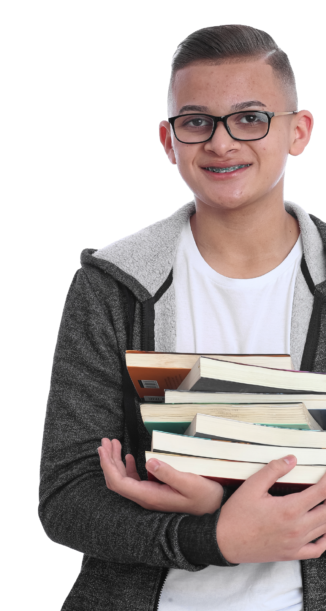
LEGENDA: Foto: Peterson Mateus, atendido pela Fundação Dorina. FIM DA LEGENDA.
Página 4
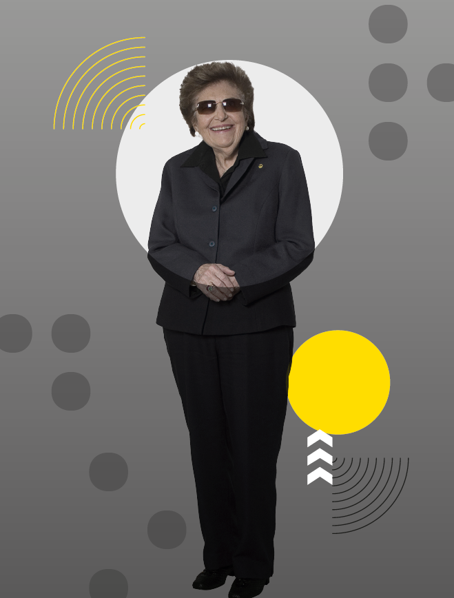
LEGENDA: Foto: Dorina Nowill, fundadora. FIM DA LEGENDA.
Página 5
1. Institucional
Página 6

LEGENDA: Foto: Dorina Nowill, fundadora. FIM DA LEGENDA.
Introdução
Citação:
Tudo o que quero é recomeçar até o último dia da minha vida.
(Dorina de Gouvêa Nowill)
Fim da citação.
Ao longo de sua trajetória, a Fundação Dorina Nowill para Cegos construiu um trabalho reconhecido pela qua lidade dos serviços e pelo compromisso com a inclusão de pessoas cegas ou com baixa visão. Em 2025, esse compromisso se refletiu também na ampliação da estrutura física da instituição, um passo importante para acompanhar o crescimento das atividades e oferecer condições cada vez melhores de atendimento para clientes e familiares.
Página 7
Investir em novos espaços, modernizar instalações e infraestrutura é parte do esforço permanente para que a Fundação continue atuando com excelência. Mais do que crescimento físico, essas mudanças representam a responsabilidade de manter a qualidade do atendimento e garantir que a instituição esteja preparada para responder às demandas de um público cada vez maior, sem perder o cuidado individual que sempre marcou sua atuação.
Com quase oito décadas de história, a Fundação segue compartilhando conhecimento, formando parcerias e ampliando seu alcance em diferentes regiões do Brasil. Ao mesmo tempo, mantém viva a essência que acompanha sua trajetória desde o início: oferecer acolhimento, promover autonomia e criar oportunidades para que pessoas com deficiência visual participem plenamente da sociedade.
Nas páginas deste relatório, apresentamos as principais ações, avanços e conquistas de 2025. Mais do que um registro das atividades, este documento é também uma forma de reconhecer e agradecer a todos que contribuem para que a Fundação continue crescendo com qualidade, responsabilidade e propósito.
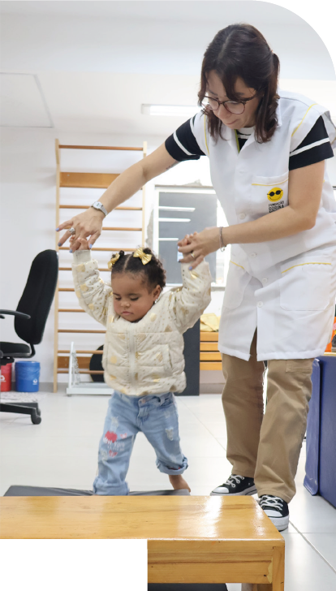
LEGENDA: Foto: Alice Santos, em atendimento na Fisioterapia. FIM DA LEGENDA.
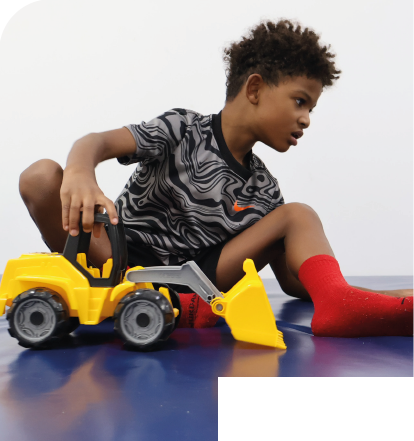
LEGENDA: Foto: Guilherme Lourenço, atendido pela Fundação Dorina. FIM DA LEGENDA.
Página 8
Perfil da Organização
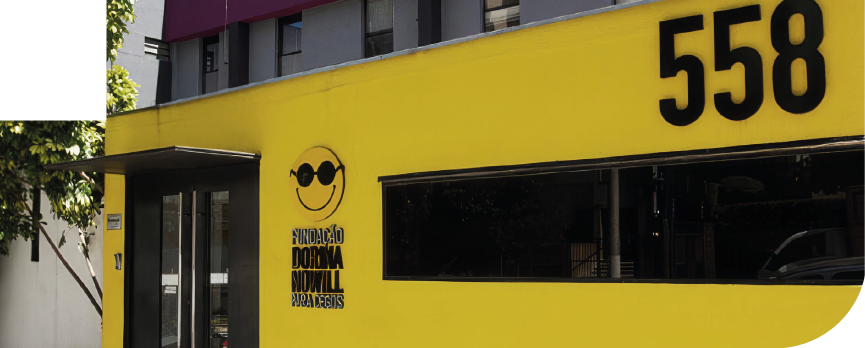
LEGENDA: Foto Fachada da Fundação. FIM DA LEGENDA.
A Fundação Dorina Nowill para Cegos trabalha para promover a autonomia e a independência de pessoas cegas ou com baixa visão, ao mesmo tempo em que busca sensibilizar a sociedade sobre a importância da inclusão, da acessibilidade e do direito de todas as pessoas à participação plena na vida social, cultural e profissional.
A instituição nasceu da iniciativa de Dorina Nowill, educadora que perdeu a visão ainda jovem e decidiu transformar sua própria experiência em uma causa. Ao enfrentar desafios para continuar estudando e ter acesso à leitura, Dorina iniciou um movimento para ampliar a produção de livros em braille no Brasil. Esse esforço levou, em 1946, à criação da Fundação para o Livro do Cego no Brasil, com o objetivo de garantir que pessoas com deficiência visual tivessem acesso à informação e à educação. A produção de livros acessíveis, que marcou o início dessa história, permanece até hoje como uma das bases do trabalho da Fundação.
Com o passar do tempo, a atuação da instituição foi se ampliando e incorporando novas frentes, sempre com foco na autonomia, no acesso ao conhecimento e na inclusão social. A Fundação se modernizou, desenvolveu tecnologias e soluções nas áreas editorial, gráfica e audiovisual, e estruturou serviços especializados de habilitação, reabilitação e apoio às famílias, acompanhando as mudanças da sociedade e as necessidades das pessoas atendidas.
Hoje, reconhecida no Brasil e no exterior pela qualidade de seu trabalho, a Fundação Dorina segue ampliando projetos e parcerias, mantendo vivo o compromisso que deu origem à sua história: contribuir para que cada vez mais pessoas com deficiência visual tenham oportunidades, independência e participação em todos os espaços da sociedade.
Página 9
Propósito, Valores e Visão
Nosso PROPÓSITO
Promover a inclusão e a acessibilidade para pessoas cegas ou com baixa visão, para juntos transformarmos vidas e a sociedade.
Nossos VALORES
Ética é inegociável.
Transparência no que fazemos e como fazemos.
Respeito é tão bom que não dispensamos.
Diversidade é um fato; inclusão é nossa escolha.
Perseverança em tudo que fazemos - e, por isso, não desistimos.
Compromisso com nosso propósito.
Inovação para construir o futuro, valorizando o nosso legado.
Nossa VISÃO
Ser reconhecida mundialmente como referência em protagonismo inclusivo, expandindo, inovando e multiplicando ações de impacto para todas as gerações.

LEGENDA: Foto: Nadir Chuahy, atendido pela Fundação Dorina. FIM DA LEGENDA.
Página 10
Números da deficiência no Brasil
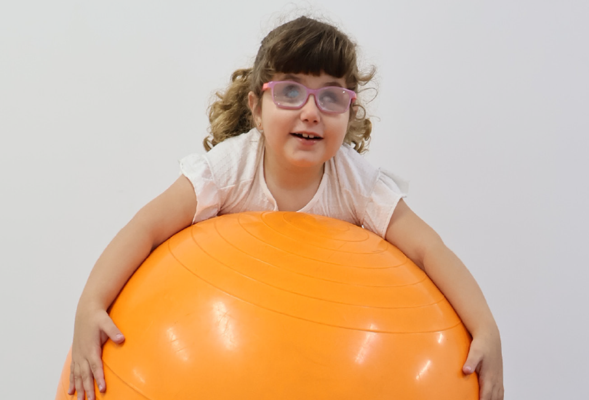
LEGENDA: Foto: Alice Vitória Domingues, atendida pela Fundação Dorina. FIM DA LEGENDA.
No Brasil, dados do IBGE indicam que aproximadamente 6,5 milhões de pessoas têm deficiência visual, sendo cerca de 528 mil pessoas cegas e mais de 6 milhões com grande dificuldade para enxergar, caracterizada como baixa visão. Esses números reforçam a necessidade de políticas públicas, serviços especializados e iniciativas voltadas à acessibilidade, à reabilitação e à ampliação da autonomia das pessoas com deficiência visual.
Segundo a Organização Mundial da Saúde (OMS), entre 60% e 80% dos casos de cegueira poderiam ser evitados com diagnóstico precoce e tratamento adequado.
No Brasil

6,5 MILHÕES
de pessoas com deficiência visual
Quinhentas e vinte e oito MIL
pessoas cegas
MAIS DE 6 MILHÕES
com baixa visão
Fontes
Organização Mundial da Saúde (WHO). World Report on Vision. GBD 2020 Vision Loss Expert Group – The Lancet Global Health. Instituto Brasileiro de Geografia e Estatística (IBGE) – Censo Demográfico / pesquisas nacionais sobre deficiência. International Agency for the Prevention of Blindness (IAPB).
Página 11
Palavra do Presidente
Eduardo de Oliveira
Presidente do Conselho de Curadores
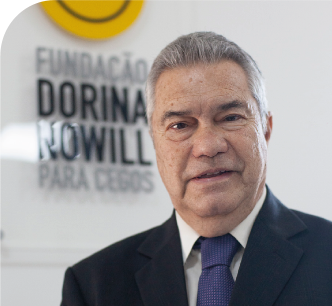
O ano de 2025 foi de grande relevância para a Fundação Dorina Nowill para Cegos. Além de representar meu primeiro ano à frente da presidência da instituição, foi também um tempo de preparação para a celebração dos 80 anos da Fundação, que serão comemorados em 2026. Assumo esse lugar com o compromisso de dar continuidade a uma trajetória construída com seriedade, dedicação e impacto social ao longo de décadas.
Demos sequência a ações estratégicas e a projetos estruturantes para o fortalecimento da instituição. En tre eles, destaco a continuidade das obras e o avanço na consolidação da Unidade 2, ampliando o espaço de atendimento e criando condições para que a Fundação siga crescendo com sustentabilidade, qualidade e responsabilidade. Também seguimos investindo na ampliação do acesso a recursos e tecnologias assistivas, como as linhas braille, e no fortalecimento de parcerias com o poder público, especialmente com Secretarias de Educação. Essas articulações são fundamentais para expandir o alcance do trabalho da Fundação e levar conhecimento, apoio e atendimento a mais pessoas e territórios.
Outro aspecto importante deste ano foi o esforço de consolidação do nome da Fundação Dorina no Brasil e internacionalmente, reforçando seu reconhecimento como uma instituição de referência, inovadora e comprometida com a excelência. Esse movimento se dá tanto pela qualidade do trabalho realizado quanto pelo diálogo permanente com autoridades públicas, parceiros institucionais e diferentes redes de atuação.
Mais do que preparar uma celebração, 2025 foi um ano de fortalecimento das bases para o futuro. Ao nos aproximarmos dos 80 anos da Fundação, reafirmamos nosso compromisso com o legado construído até aqui, mas também com a longevidade institucional, a sustentabilidade financeira e a capacidade de seguir ampliando atendimentos sem abrir mão da qualidade.
Seguiremos trabalhando para fortalecer esse legado, ampliar parcerias, apoiar iniciativas em diferentes frentes e garantir que a Fundação Dorina continue sendo uma instituição de referência, preparada para os desafios do presente e do futuro.
Página 12
Palavra do Superintendente
Alexandre Munck
Superintendente Executivo
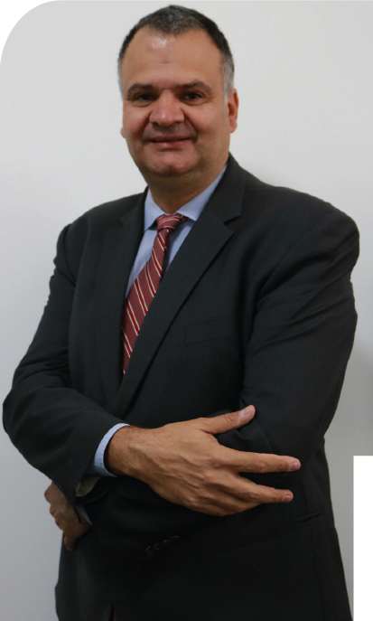
O ano de 2025 foi marcado por grandes desafios e importantes conquistas para a Fundação Dorina Nowill para Cegos. Em meio às obras de modernização da nossa sede e aos preparativos para a celebração dos 80 anos da instituição, seguimos firmes no compromisso de ampliar o acesso das pessoas com deficiência visual a serviços de qualidade, mantendo nossas atividades em pleno funcionamento e, mais do que isso, alcançando novos patamares de atendimento.
Mesmo com as intervenções estruturais em andamento, registramos o maior número de atendimentos da nossa história, superando a marca de dois mil clientes atendidos ao longo do ano. Esse resultado reflete o empenho de toda a equipe e o fortalecimento das ações de busca ativa, que têm permitido levar o trabalho da Fundação a pessoas que ainda não haviam tido acesso aos serviços de reabilitação, educação e inclusão, especialmente aquelas que se encontram em situação de maior vulnerabilidade ou ainda distantes dos processos de inclusão digital.
O ano também foi marcado pelo fortalecimento de parcerias institucionais importantes, que já se consolidam ao longo dos últimos anos, demonstram que o trabalho em rede é fundamental para garantir mais autonomia e qualidade de vida às pessoas com deficiência visual.
No campo internacional, a Fundação participou de encontros estratégicos e passou a integrar, como membro efetivo, o Consórcio DAISY (Digital Accessible Information System), organização internacional dedicada ao desenvolvimento de padrões e tecnologias para tornar livros e conteúdos acessíveis a pessoas com deficiência visual ou outras dificuldades de leitura.
Página 13
Também estivemos presentes em importantes eventos mundiais, como o 11º Encontro Mundial da Deficiência Visual (World Blindness Summit), ampliando o intercâmbio de conhecimento e fortalecendo o papel da Fundação como referência internacional na promoção da acessibilidade, da leitura inclusiva e dos direitos das pessoas com deficiência visual. Seguimos avançando dentro do planejamento estratégico da instituição, com investimentos na modernização da sede, na ampliação dos espaços de atendimento e na valorização de iniciativas fundamentais para nossa história e identidade, como o Centro de Memória e a Biblioteca Acessível, que preservam e compartilham o legado construído ao longo de oito décadas.
Outro ponto de destaque foi a ampliação da visibilidade da Fundação e levar nossas ações a um número cada vez maior de pessoas, parceiros e apoiadores. Esse movimento é essencial para garantir sustentabilidade financeira e possibilitar o desenvolvimento de novos projetos, assegurando que possamos continuar crescendo de forma responsável e alinhada à nossa missão.
![Imagem: Fotografia. Um palco amplo com um grande painel azul ao fundo com formas geométricas em verde e amarelo, o texto ‘Encontro Mundial da Deficiência Visual; SÃO PAULO, 2025’ e a ilustração da silhueta da anatomia de um olho com um globo terrestre. Sobre o palco, à esquerda, uma pessoa está em pé atrás de um púlpito; ao centro, várias pessoas estão sentadas em cadeiras alinhadas; à direita, uma pessoa está em pé sinalizando em libras. Na parte superior, há refletores com luzes coloridas em uma estrutura metálica. Na parte inferior, uma escadaria central com degraus vermelhos. Em frente ao palco, há várias fileiras de cadeiras ocupadas por uma plateia, com pessoas vistas de costas. Fim da imagem.](../resources/images/image_Image14040.png)
LEGENDA: Foto: Murilo Guedes, atendido pela Fundação Dorina. FIM DA LEGENDA.
Página 14
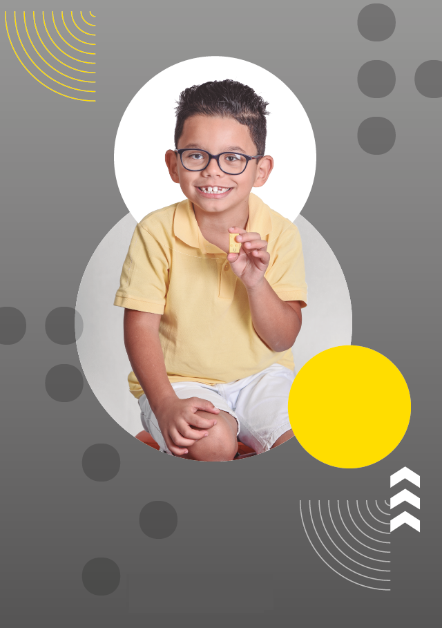
LEGENDA: Foto: Murilo Guedes, atendido pela Fundação Dorina. FIM DA LEGENDA.
Página 15
2. Serviços de Apoio à Inclusão
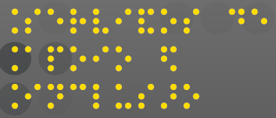
Página 16
Habilitação/Reabilitação
![Imagem: Fotografia. À esquerda, uma mulher com cabelos loiros presos em um rabo de cavalo, usa boné cinza, camiseta vermelha e calça cinza. Ela está com as costas inclinadas para baixo, com as mãos apoiadas uma no ombro e outra na mão de um menino. O menino usa óculos, capacete dourado e preto de bombeiro e uniforme de bombeiro, composto por um casaco cinza com faixas refletivas. O uniforme fica grande no menino. Ao fundo, parte de um caminhão vermelho de bombeiros estacionado em piso de blocos cinza. Fim da imagem.](../resources/images/image_Image14071.png)
LEGENDA: Foto: Visita ao Corpo de Bombeiros. FIM DA LEGENDA.
A área de Habilitação e Reabilitação é, para muitas pessoas cegas ou com baixa visão, o principal ponto de entrada na Fundação Dorina Nowill para Cegos. É nesse atendimento que se inicia o processo de desenvolvimento da autonomia, da independência e da inclusão, envolvendo não apenas a pessoa atendida, mas também suas famílias.
Em 2025, a Fundação Dorina manteve um marco importante, ultrapassando 55 mil atendimentos realizados ao longo do ano. Destaca-se, ainda, que o número de crianças ativas superou o de jovens, resultado do fortalecimento das ações de busca ativa e do investimento no diagnóstico precoce da deficiência visual. A identificação antecipada possibilita melhores resultados no processo de habilitação, promovendo ganhos significativos no desenvolvimento infantil e maior preparo das famílias para o cuidado e o acompanhamento.
Com esse foco, a área ampliou a oferta de atividades voltadas às crianças, adolescentes e seus familiares, incluindo oficinas e práticas nas áreas expressiva, cultural e educativa, como arte, judô, mini goalball, tai chi chuan, coral, teatro, braille e transcrição em braille para familiares.
No que se refere às atividades externas, em 2025 houve ampliação da programação iniciada no ano anterior, com ações como remada inclusiva promovida pelo Conselho Brasileiro de Oftalmologia, vela inclusiva em parceria com o projeto Sailing Sense, além de atividades culturais em museus, cinemas, teatros, unidades do Sesc e outros espaços. Essas vivências contribuem para o fortalecimento da autonomia, da socialização e do direito ao lazer inclusivo, permitindo que os clientes coloquem em prática os conceitos trabalhados nos atendimentos e oferecendo também um importante campo de observação para a equipe técnica.
No âmbito interno, a equipe foi fortalecida com a contratação de novos profissionais, trazendo novas ideias e ampliando as possibilidades de atuação. Em 2025, a musicoterapia se consolidou como uma importante ferramenta de participação e pertencimento das pessoas atendidas.
Página 17
Foi mantida também a prática do Takkyu Volley, primeiro esporte introduzido na Fundação, modalidade que integra elementos do vôlei e do tênis de mesa e promove a inclusão por permitir a participação de pessoas de diferentes idades, com ou sem deficiência. Outra novidade do ano foi a implantação da Clínica de Visão Subnormal na Unidade 2 da Fundação Dorina. O novo espaço, aliado a uma equipe especializada em atendimento oftalmológico e ortóptico, possibilitou redução no tempo de espera para consultas e melhor organização das agendas, oferecendo um ambiente mais acolhedor e adequado às necessidades dos clientes.
A área de Habilitação e Reabilitação também compartilhou sua experiência com outras instituições brasileiras, contribuindo para a ampliação do atendimento a pessoas cegas ou com baixa visão, por meio de importantes parcerias com a Associação Catarinense para Integração do Cego (ACIC) e o Instituto Sul-Mato-Grossense para Cegos Florivaldo Vargas (ISMAC).
Boxe complementar:
Takkyu Volley: esporte, autonomia e novas possibilidades
O Takkyu Volley é uma das práticas desenvolvidas na área de Habilitação e Reabilitação e pode ser praticado por pessoas de diferentes idades, com ou sem deficiência, favorecendo a convivência e a participação. A atividade cria um ambiente em que os participantes se permitem experimentar movimentos e desafios que nem sempre vivenciam em outros contextos. Para a equipe técnica, o esporte também é um espaço de observação e acompanhamento, possibilitando ampliar estratégias de apoio e de aprendizagem, contribuindo para o desenvolvimento da autonomia e das possibilidades de participação das pessoas cegas ou com baixa visão.
![Imagem: Fotografia. Sete pessoas estão sentadas ao redor de uma mesa azul de tênis de mesa, com uma rede ao centro e uma bolinha laranja. Cada pessoa segura uma raquete adaptada sobre a mesa, a raquete é composta por um suporte preto retangular. Ao centro, um homem com cabelos castanhos curtos, usa camisa polo rosa com listras brancas e segura uma raquete adaptada, próximo à raquete há uma bolinha de tênis de mesa laranja. À esquerda, uma mulher com cabelos longos e ruivos, usa blusa preta. Ao lado dela, uma pessoas usa blusa cinza. À esquerda, quatro homens: dois possuem cabelos grisalhos curtos e usam camisa de cores claras; outro usa boné preto e blusa preta; e o último usa boné cinza. Ao fundo, uma menina com os olhos fechados e um homem segurando as mãos dela, eles estão sentados em cadeiras; atrás, brinquedos de parque infantil. Fim da imagem.](../resources/images/image_Image14082.png)
LEGENDA: Foto: Prática de Takkyu Volley. FIM DA LEGENDA.
Fim do complemento.
Números de Atendimento
2.215
clientes
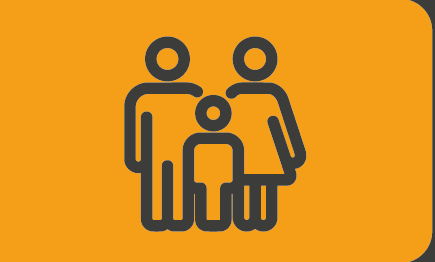
2.585
familiares
55.444
atendimentos
Página 18
Cursos
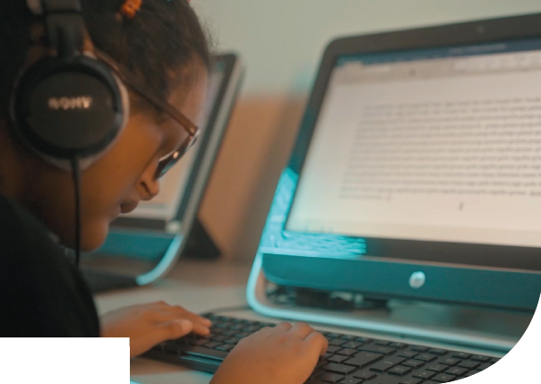
LEGENDA: Foto: Curso de Informática. FIM DA LEGENDA.
Em 2025, novos cursos foram oferecidos aos clientes da Fundação, ampliando as possibilidades de formação e desenvolvimento pessoal e profissional. Ao longo do ano, 490 alunos participaram das atividades formativas, distribuídas em diferentes áreas de interesse.
Foram oferecidos cursos como Arte Parte Todos os Sentidos, atendimento ao cliente, coral, empreendedorismo na era digital, informática, inglês, marketing digital, massoterapia básica e intermediária, meditação, musicografia braille, musicoterapia, teatro, técnicas administrativas, além de turmas específicas de inglês e empreendedorismo voltadas para adolescentes.
As formações contribuem para o fortaleci-mento da autonomia, para a ampliação das oportunidades de inserção social e para o desenvolvimento de habilidades que favorecem a participação das pessoas cegas ou com baixa visão em diferentes contextos da vida cotidiana e profissional.
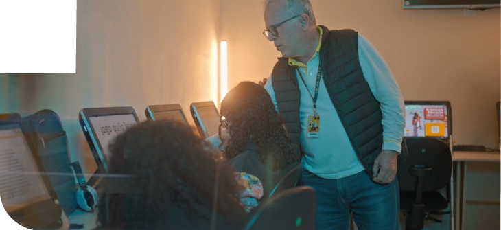
LEGENDA: Foto: Aula de Informática para atendidos pela Fundação. FIM DA LEGENDA.
Página 19
Central de Formações
Em 2025, o curso de Introdução à Audiodescrição passou por reformulação e contou com a formação de três turmas ao longo do ano. Também foram realizadas duas turmas do curso Narração Presencial de Audiolivro, ampliando as oportunidades de qualificação na área de acessibilidade. Ao todo, 920 alunos adquiriram cursos oferecidos pela Central de Formações, um aumento de 59% em relação a 2024, quando foram registrados 577 alunos. Desse total, 118 alunos com deficiência visual tiveram acesso gratuito aos cursos, número 57% superior ao de 2024, que contou com 75 participantes nessa modalidade.
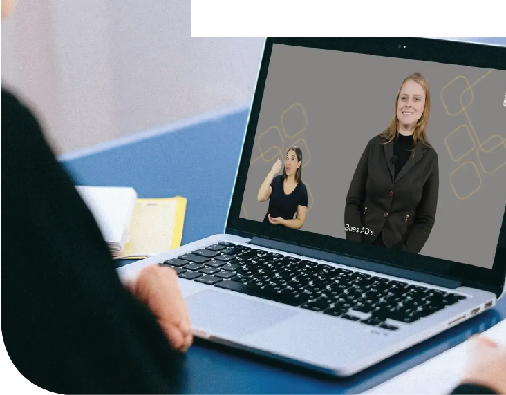
LEGENDA: Foto: Introdução Central de Formações. FIM DA LEGENDA.
Página 20
Serviços de Educação e Cultura
Biblioteca e Dorinateca
A Fundação mantém a Biblioteca e a Dorinateca, que juntas ampliam o acesso à leitura para pessoas cegas ou com baixa visão, por meio do empréstimo de obras físicas e do acesso a livros em formatos digitais acessíveis. Esses espaços reúnem leitores, instituições e produtores de conteúdo, fortalecendo a circulação de obras e o compartilhamento de materiais em todo o país.
Em 2025, houve crescimento no número de usuários cadastrados, no acervo disponível e na utilização dos serviços, consolidando a Biblioteca e a Dorinateca como importantes centros de acesso ao livro acessível no Brasil. A participação de instituições parceiras também contribuiu para ampliar a produção e a distribuição de conteúdos em formatos inclusivos.
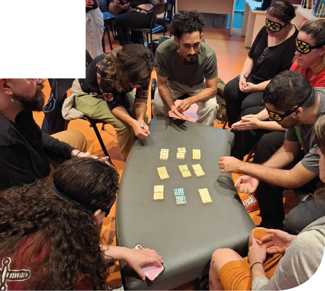
LEGENDA: Foto: Atividade com educadores na Fábrica de Cultura Belém. FIM DA LEGENDA.
713
novos usuários cadastrados em 2025
3.244
usuários cadastrados na plataforma
489
novos leitores cadastrados
2.020
leitores cadastrados na plataforma
Duzentas e vinte e quatro
novas instituições cadastradas
Mil duzentas e vinte e quatro
instituições cadastradas
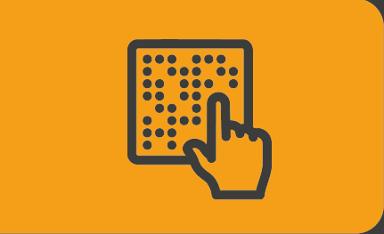
2.427
downloads de livros realizados
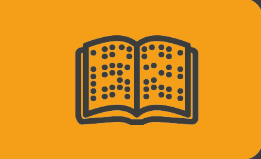
1.020
empréstimos de livros (acervo circulante)
Cinco mil setecentas e trinta e cinco
obras acessíveis disponíveis no acervo
Página 21
Rede de Leitura Inclusiva
A Rede de Leitura Inclusiva atua na articulação com instituições das áreas de educação, leitura e cultura em todo o Brasil, promovendo a distribuição de livros acessíveis e o diálogo sobre a implementação de práticas de acessibilidade em diferentes espaços. O trabalho da Rede busca ampliar o acesso à leitura para pessoas cegas ou com baixa visão, além de apoiar a formação de profissionais e instituições comprometidas com a inclusão.
Em 2025, a equipe participou de programações relacionadas ao livro, à leitura e à acessibilidade em diferentes regiões do país. Entre as ações realizadas, destacam-se o evento braillevery, em João Pessoa (Paraíba); o 11º Seminário Leitura para Todos, em Salvador (Bahia); o projeto Mala de Leitura, em Agudo (Rio Grande do Sul); a 24ª Feira Internacional do Livro de Ribeirão Preto (São Paulo); e a 4ª Feira de Acessibilidade do Distrito Federal.
Ao longo do ano, também foi promovido o ciclo formativo Encontros de Leitura Inclusiva, realizado na sede da Fundação Dorina, reunindo parceiros de diversas regiões do Brasil. Como parte dessa iniciativa, foram realizadas as lives Rede Convida, com convidados que compartilha-ram experiências sobre produção de materiais pedagógicos acessíveis, clubes de leitura inclusivos, acessibilidade cultural e produção de livros em múltiplos formatos.
Os principais números da rede foram:
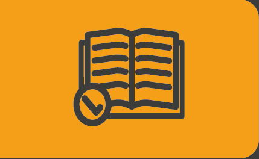
100
ações realizadas sobre leitura acessível e inclusiva
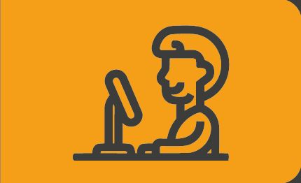
1.210
participantes em atividades virtuais (lives, oficinas e articulações)
1.468
novas instituições cadastradas participantes em atividades presenciais (oficinas, seminários e feiras)
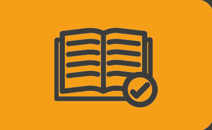
Mil seiscentas e doze
instituições receberam doação de livros acessíveis
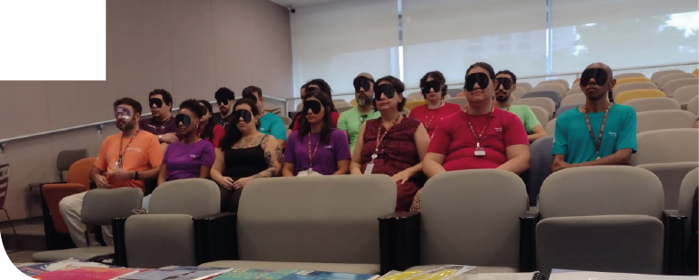
LEGENDA: Foto: Atividade de mediação com bibliotecários na Biblioteca São Paulo. FIM DA LEGENDA.
Página 22
Centro de Memória
Durante o ano de 2025, foi realizado o projeto “Acervo Dorina Nowill: Documentação e Conservação”, que teve como objetivo a organização, conservação e digitalização do acervo do Centro de Memória Dorina Nowill. Como resultado, parte significativa do material foi disponibilizada em plataforma online, ampliando o acesso do público geral ao conteúdo histórico da instituição.
Na sede da Fundação, o público também foi recebido em visitas mediadas pela equipe do Educativo, com apresentação do acervo e do espaço expositivo. Durante o primeiro semestre, os visitantes puderam conhecer a exposição “E tudo começou assim…”, dedicada à história da instituição. Paralelamente, teve início a concepção da nova exposição “8 ou 80”, criada em celebração aos 80 anos da Fundação Dorina, com lançamento previsto para março de 2026.
O Centro de Memória participou de eventos e atividades voltadas à preservação da memória, à cultura e à inclusão, entre eles:
• Segundo Encontro de Arquivo, Cultura e Justiça Social, realizado pela Fundação Casa de Rui Barbosa (FCRB) em parceria com o Programa de Pós-Graduação em Ciência da Informação da Universidade Federal Fluminense (PPGCI/UFF)
• 1º Seminário “Mulheres em Movimento: Lei Catorze mil novecentos e oitenta e seis de dois mil e vinte e quatro”
• Participação na 23ª Semana Nacional de Museus, em parceria com o Museu de Arte Moderna de São Paulo (MAM-SP) e a Secretaria Municipal de Educação de São Paulo
Os números do Centro de Memória foram:
195
visitas realizadas
1.575
visitantes
2.010
itens históricos disponibilizados no acervo virtual
![Imagem: Reprodução de página de internet. No topo, há uma faixa amarela com o texto: Acervo digital acessível e o logotipo da Fundação Dorina e do Centro de Memória Dorina Nowill. Abaixo, barra de navegação com campo para Palavra-chave; e os botões: Buscar; Limpar, Busca avançada. No centro, banner horizontal com cantos arredondados; à esquerda, fotografia de uma mesa com objetos sobre ela; à direita, fotografia em preto e branco de um prédio; entre ambas, recorte de fotografia de Dorina Nowill jovem, possui cabelos curtos volumosos e penteados para o lado, usa colar de pérolas e blusa escura. Sobre as fotografia, há o texto ‘Dorina Nowill’ escrito em pontos braille em amarelo. Abaixo, à esquerda, o texto: Dorina Nowill: história e memória. Na parte inferior, retratos em preto e branco de Dorina Nowill, cada um com legenda; como: Foto retrato de Dorina Nowill, Anos 40-50, Foto retrato de Dorina Nowill, Anos 40-50, Foto retrato de Dorina Nowill, Anos 50-60. Fim da imagem.](../resources/images/image_Image14293.png)
LEGENDA: Foto: Acervo digital acessível. FIM DA LEGENDA.
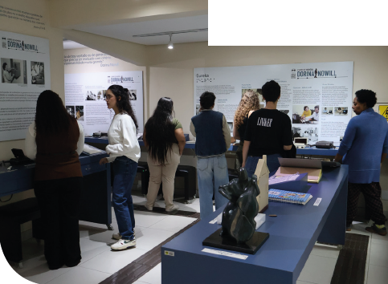
LEGENDA: Foto: Visita mediada ao Centro de Memória. FIM DA LEGENDA.
Página 23
Empregabilidade
Em 2025, a área de Empregabilidade manteve sua atuação voltada à orientação profissional e à preparação de pessoas cegas ou com baixa visão para o mundo do trabalho. Ao longo do ano, 374 clientes participaram de atendimentos individuais e atividades formativas, com foco no desenvolvimento de habilidades e no encaminhamento para oportunidades profissionais.
As ações de sensibilização também foram ampliadas, com a realização de palestras, workshops e eventos que alcançaram Três mil trezentas e cinquenta e uma pessoas. Essas iniciativas tiveram como objetivo promover a conscientização sobre a inclusão da pessoa com deficiência visual no mercado de trabalho e fortalecer o diálogo com empresas e instituições.
No relacionamento com o setor corporativo, a equipe atuou junto a Duzentas e uma empresas, estabelecendo parcerias voltadas à geração de oportunidades de trabalho e à ampliação de ambientes mais acessíveis e inclusivos.
Entre os destaques do ano está o lançamento do Dorinacast, videocast produzido pela Fundação com o objetivo de compartilhar histórias, discutir temas relacionados à inclusão e apresentar ao público o trabalho realizado pela instituição.
374
clientes em orientação profissional
Três mil trezentas e cinquenta e uma
pessoas conscientizadas
Duzentas e uma
empresas parceiras
Boxe complementar:
Dorinacast fortalece a conscientização sobre inclusão e empregabilidade
Em 2025, a Fundação lançou o Dorinacast, videocast institucional voltado à discussão de temas relacionados à inclusão, autonomia e participação da pessoa com deficiência visual na sociedade. Disponível nas plataformas YouTube e Spotify, o programa apresenta entrevistas e conversas com convidados, abordando vários temas que permeiam os Caminhos para a Empregabilidade da pessoa com deficiência visual. A iniciativa contribui para ampliar o alcance das ações de conscientização da Fundação, promovendo o diálogo com a sociedade e reforçando a importância da inclusão no mundo do trabalho.
Fim do complemento.
Página 24
LEGO® Braille Bricks
Criado em 2020, o projeto LEGO® Braille Bricks é uma iniciativa desenvolvida pela Fundação Dorina Nowill para Cegos em parceria com a Fundação LEGO, da Dinamarca, com o objetivo de apoiar o processo de alfabetização de forma inclusiva. O material pedagógico utiliza peças adaptadas que combinam o alfabeto braille e a representação em caracteres visuais, permitindo que crianças com e sem deficiência visual aprendam juntas, de forma lúdica e colaborativa.
Ao longo de 2025, o programa ampliou significativamente sua presença em diferentes regiões do Brasil, consolidando-se como uma ferramenta pedagógica de grande alcance. O número de educadores participantes foi o maior desde a criação do projeto, assim como o volume de parcerias firmadas com Secretarias Municipais de Educação, instituições especializadas e escolas da rede privada. A formação de professores tem sido um dos principais pilares da iniciativa, permitindo que o uso do recurso seja incorporado ao cotidiano escolar e alcance um número cada vez maior de estudantes.
Durante o ano, o projeto esteve presente em eventos e ações formativas, entre eles o 11º Encontro Mundial da Deficiência Visual, no qual foram realizadv as demonstrações práticas do uso do LEGO® Braille Bricks e oficinas com a participação de educadores e especialistas do Brasil e do exterior. Também foi realizada a I Oficina Regional LEGO® Braille Bricks, voltada ao aprofundamento das experiências pedagógicas de educadores que já haviam participado das formações anteriores.
Outro destaque foi a segunda edição do Prêmio LEGO® Braille Bricks, que reconhece práticas pedagógicas inclusivas desenvolvidas por educadores em diferentes regiões do país. As iniciativas finalistas foram premiadas com apoio de parceiros institucionais, incentivando a continuidade e a multiplicação das experiências em sala de aula.
Em 2025, foi inaugurada a Sala Interativa LEGO® Braille Bricks, concebida como espaço de referência para formação e demonstração do uso do material pedagógico. O ambiente foi criado para promover o compartilhamento de boas práticas, ampliar o conhecimento sobre o processo de alfabetização em braille e fortalecer o uso de recursos inclusivos no contexto escolar.

LEGENDA: Foto: Processo de alfabetização com LEGO® Braille Bricks. FIM DA LEGENDA.
Página 25
Números do LEGO® Braille Bricks
5.149
educadores participantes
Noventa e uma
parcerias formalizadas
Cinquenta e duas
Secretarias Municipais de Educação
44
instituições especializadas
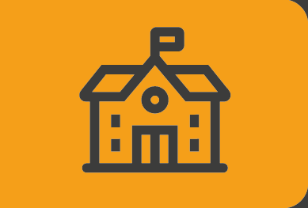
3
colégios particulares
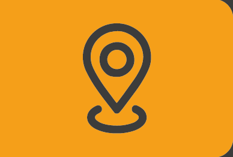
85
municípios envolvidos
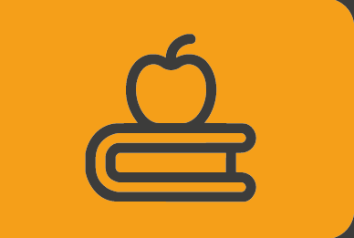
Mil duzentas e sessenta e uma
escolas participantes
3.457
kits distribuídos
47.550
estudantes sem deficiência visual impactados
1.585
estudantes com deficiência visual impactados
Boxe complementar:

LEGENDA: Foto: Aprender brincando e com inclusão. FIM DA LEGENDA.
Alfabetização inclusiva e inovação pedagógica
O LEGO® Braille Bricks tem se consolidado como uma ferramenta pedagógica inovadora no processo de alfabetização inclusiva. Ao combinar o sistema braille com a representação visual das letras em um material lúdico e interativo, o recurso permite que crianças com e sem deficiência visual aprendam juntas, favorecendo a colaboração, a troca de experiências e o desenvolvimento da leitura e da escrita de forma acessível. A proposta amplia as possibilidades de ensino em sala de aula e contribui para que educadores adotem práticas mais inclusivas, estimulando a participação de todos os estudantes no processo de aprendizagem.
Fim do complemento.
Página 26

LEGENDA: Foto: Bruna Ramos, atendida pela Fundação Dorina. FIM DA LEGENDA.
Página 27
3. Soluções em Acessibilidade
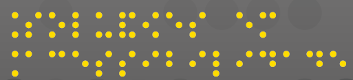
Página 28
Comercial
Em 2025, a estratégia comercial da Fundação concentrou-se no fortalecimento do relacionamento com clientes estratégicos e na ampliação de oportunidades nas áreas de braille, Audiovisual e Digital. No braille, o foco esteve na consolidação das parcerias com editoras de livros didáticos, resultando no aumento do volume de produções ao longo do ano junto a clientes como Arco Educação, Somos Educação, Moderna e Etapa.
No Audiovisual, foi mantida a parceria com Audible e Bookwire, com destaque para a produção de audiolivros, contribuindo para a ampliação do catálogo acessível no mercado editorial. Já na área Digital, a Fundação seguiu como referência na produção de descrição de imagens e Objetos Educacionais Digitais (OEDs), além do desenvolvimento de conteúdos acessíveis em ePUB3 e HTML, em parceria com editoras como SM Educação, Editora do Brasil e Saber Educação. Em 2025, a área alcançou a marca de Cinquenta e nove mil trezentas e oitenta e três páginas produzidas, considerando o indicador baseado em página original (tinta), além da acessibilização de 1.437 títulos, números que refletem o crescimento contínuo da demanda e o fortalecimento da atuação da Fundação na produção de conteúdos digitais acessíveis.
A área Comercial também retomou parcerias estratégicas e gerou novas oportunidades por meio de projetos consultivos, com destaque para iniciativas como Nestlé – Rótulos que Falam e VML – Cores que Tocam, além da realização de palestras e workshops voltados à sensibilização e à acessibilidade, como as ações desenvolvidas com a HOYA Lens Brazil.
Ao longo do ano, a área superou a meta prevista, alcançando resultado superior ao planejado e ampliando o número de projetos atendidos.
Números do Comercial:
META:
5,316 Milhões
REALIZADO:
5,317 Milhões
TOTAL DE ORÇAMENTOS EMITIDOS:
1.392
TOTAL DE PROJETOS/OSs:
899
A Fundação também marcou presença em eventos relevantes do setor, como Bett Brasil, Bienal Internacional do Livro do Rio de Janeiro, 4ª edição do Encontro de Editores, Livreiros, Distribuidores e Gráficos e a Festa Literária Internacional de Paraty (FLIP), fortalecendo o relacionamento institucional e a prospecção de novos parceiros.
Página 29
Audiovisual
Em 2025, a área de Audiovisual manteve ritmo intenso de produção, consolidando os avanços obtidos nos últimos anos com a modernização dos estúdios e o fortalecimento da equipe técnica. O período foi marcado pelo aumento da demanda por conteúdos acessíveis, especialmente em projetos educacionais, institucionais e culturais, ampliando a atuação da Fundação na produção de audiolivros, audiodescrição e recursos de acessibilidade para diferentes mídias.
Ao longo do ano, a equipe participou de todas as etapas de produção, desde o planejamento até a finalização dos materiais, garantindo que a acessibilidade fosse considerada desde o início dos projetos. Esse modelo de trabalho tem contribuído para maior qualidade técnica, redução de prazos e ampliação do número de produções atendidas.
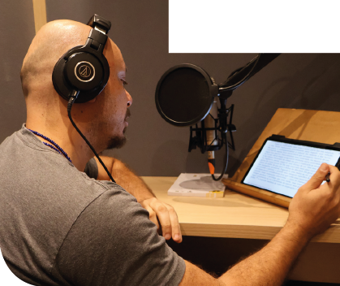
LEGENDA: Foto: Voluntário gravando no Estúdio Audiovisual da Fundação. FIM DA LEGENDA.
Boxe complementar:
Destaques de produção:
• Audiolivros didáticos para a Secretaria Municipal de Educação de São Paulo
• Audiolivros literários para Audible, Bookwire e SPTrans
• Audiodescrição para campanhas publicitárias OOH para a JCDecaux
• Audiodescrição de exposições para clientes como MIS, Unibes Cultural, Vulica Brasil e Wilson Tafner
• Acessibilidade de obras do PNLD para SM Educação e Editora FTD
Fim do complemento.
ÁUDIO
264
PROJETOS
totalizando Quarenta e três mil seiscentas e quarenta páginas
VÍDEO
481
VÍDEOS PRODUZIDOS
sendo 420 voltados à produção de acessibilidade, com audiodescrição, LIBRAS e legenda para surdos e ensurdecidos (LSE).
Página 30
Editorial e Gráfica
Boxe complementar:
EDITORIAL DIGITAL
O Editorial Digital é a área especializada na conversão de obras didáticas, literárias e demais materiais textuais para formatos digitais acessíveis, como HTML5 e ePUB3, garantindo a navegação e o acesso ao conteúdo por pessoas com deficiência visual.
EDITORIAL BRAILLE E GRÁFICA
Editorial Braille e Gráfica são áreas especializadas na adaptação, revisão, produção e impressão de materiais em Braille, transformando conteúdos didáticos, literários e informativos em formatos físicos acessíveis para pessoas cegas, com qualidade, fidelidade e acessibilidade.
Fim do complemento.
A demanda pelos serviços do Editorial braille e da Gráfica da Fundação Dorina manteve-se em crescimento ao longo de 2025, exigindo constante aprimoramento dos processos produtivos, ampliação da capacidade técnica e fortalecimento da equipe. O aumento do volume de projetos reafirma o papel da Fundação como referência nacional na produção de materiais acessíveis para pessoas com deficiência visual.
O atendimento a instituições de ensino, editoras e sistemas educacionais continuou em expansão, com a manutenção de importantes parcerias e a chegada de novos clientes ao longo do ano. A produção de materiais vinculados ao Plano Nacional do Livro Didático (PNLD) permaneceu como uma das principais frentes de trabalho, exigindo alto nível de organização e precisão, especialmente na adaptação de conteúdos mais complexos, com grande volume de informações, gráficos e elementos visuais.
A Gráfica braille manteve ritmo intenso de produção, atendendo tanto projetos comerciais quanto demandas internas da Fundação, além de contratos institucionais de grande escala. O trabalho envolve não apenas a impressão em braille, mas também a preparação técnica, revisão especializada e controle de qualidade, garantindo que cada material chegue ao leitor com total acessibilidade. A manutenção e crescimento das produções em braille e em formatos digitais reflete o compromisso da Fundação Dorina com a democratização do acesso ao conhecimento, acompanhando as transformações tecnológicas e ampliando as possibilidades de inclusão para públicos cada vez mais diversos.
Ao longo de 2025, mesmo diante do cenário de obras na sede e de desafios operacionais, o Editorial e a Gráfica mantiveram alto nível de produtividade, demonstrando a capacidade da instituição de se adaptar, inovar e continuar expandindo seu alcance sem interromper o atendimento à população.
EDITORIAL DIGITAL
PÁGINAS CONVERTIDAS:
Cinquenta e nove mil trezentas e oitenta e três
TÍTULOS ACESSIBILIZADOS:
1.437
Página 31
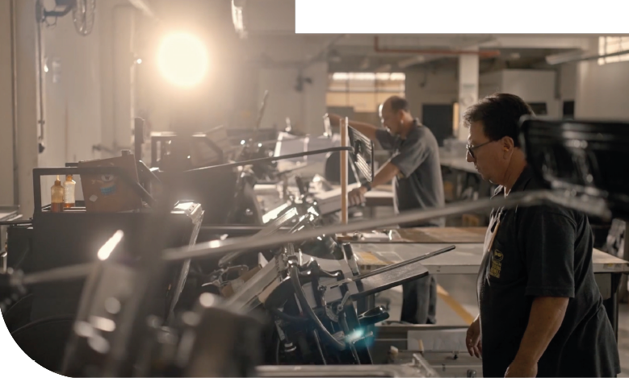
LEGENDA: Foto: Thiago Pereira, atendido pela Fundação Dorina. FIM DA LEGENDA.
EDITORIAL
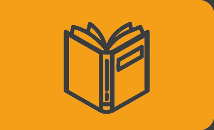
COMERCIAL
Cento e setenta e uma mil duzentas e noventa páginas
PROJETOS INTERNOS
Dezenove mil seiscentas e cinquenta e duas páginas
PRODUÇÃO, REVISÃO E CORREÇÕES
Cento e vinte e nove mil trezentas e quarenta e nove páginas
TOTAL GERAL DE PÁGINAS EDITORADAS EM 2025:
Trezentas e vinte mil duzentas e noventa e uma
GRÁFICA
COMERCIAL
Um milhão quarenta e uma mil e cinquenta e duas páginas braille
PROJETOS INTERNOS
Seis milhões novecentas e dezenove mil seiscentas e sessenta e cinco páginas braille
PNLD 2023 E PNLD 2025
Três milhões quarenta e uma mil e quinhentas e oitenta e sete páginas braille
TOTAL GERAL DE PÁGINAS EDITORADAS EM 2025:
Onze milhões e dois trezentas e quatro páginas braille
Página 32
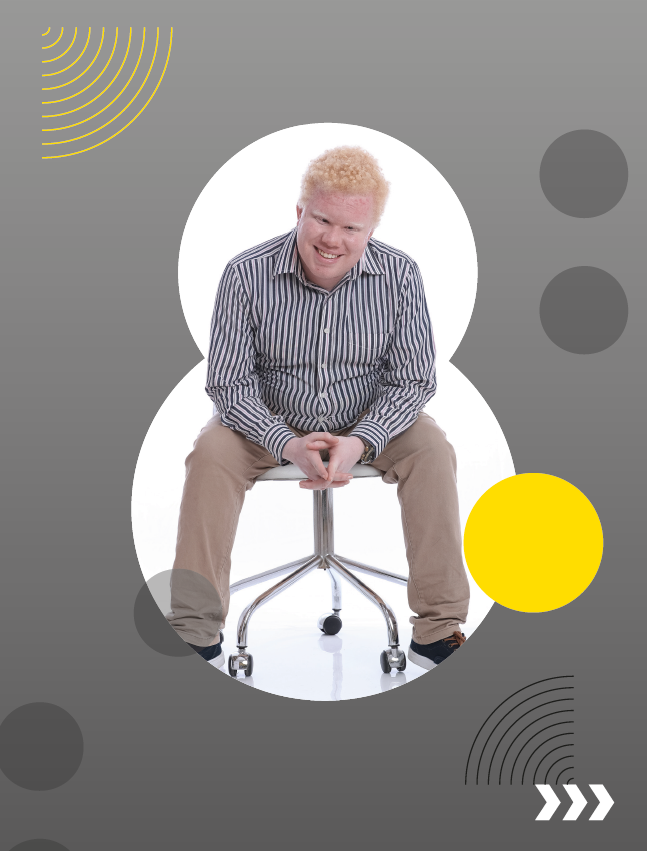
LEGENDA: Foto: Thiago Pereira, atendido pela Fundação Dorina. FIM DA LEGENDA.
Página 33
4. Áreas Administrativas
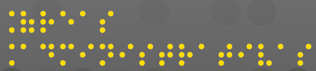
Página 34
Voluntariado
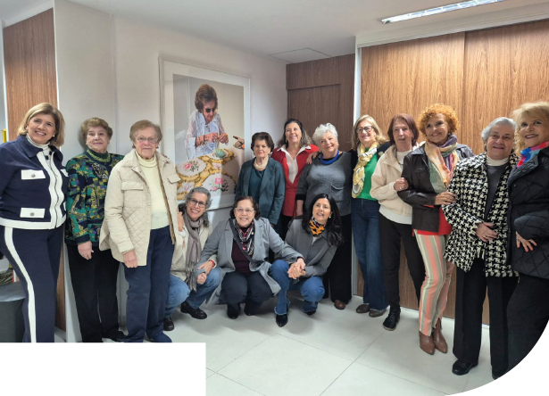
LEGENDA: Foto: Voluntários da Fundação Dorina. FIM DA LEGENDA.
Em 2025, o programa de voluntariado da Fundação Dorina contou com a participação de 230 voluntários atuantes, que contribuíram em diferentes áreas, apoiando atividades administrativas, eventos, ações institucionais e atendimentos. Ao longo do ano, foram realizadas 13 ações de engajamento corporativo, que impactaram diretamente Quinhentas e quarenta e cinco pessoas.
Destaca-se também a mobilização de 139 voluntários especializados para atuação no 11º Encontro Mundial da Deficiência Visual, ampliando o alcance das atividades da Fundação.
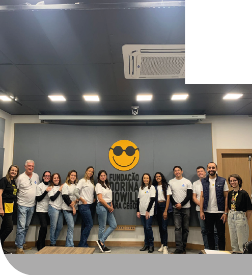
LEGENDA: Foto: Ação de voluntariado corporativo. FIM DA LEGENDA.
Entre as principais ações da área em 2025, estão:
MASTERCARD
BAZAR DE NATAL
Ação de engajamento voluntário voltada à sustentabilidade institucional, com participação de voluntários na separação de mercadorias, organização de expositores e atendimento ao público. A iniciativa contribuiu para a realização do Bazar de Natal, cuja renda foi destinada à manutenção dos serviços gratuitos oferecidos pela Fundação.
PROJETO OLHOS DE ÁGUIA
COLÉGIO PIONEIRO
Iniciativa realizada em parceria com o Colégio Pioneiro, envolvendo alunos de 15 a 17 anos em um processo formativo ao longo de sete meses. Foram trabalhados temas como diversidade, equidade e inclusão, aproximando os estudantes da realidade das pessoas com deficiência visual e incentivando a participação social por meio de ações voluntárias.
AMIS
ASSOCIAÇÃO MORUMBI DE INTEGRAÇÃO SOCIAL
O coral de crianças da instituição realizou apresentações itinerantes de músicas natalinas a cappella, promovendo momentos de integração, convivência e celebração entre clientes, colaboradores e voluntários da Fundação.
Página 35
PANORAMA DO CHORO
Apresentação musical realizada pelo grupo Panorama do Choro, como parte das ações voltadas ao acesso à cultura e ao lazer para pessoas cegas ou com baixa visão, fortalecendo o compromisso da Fundação com atividades que ampliam a participação social dos clientes.
SALA DE COSTURA THEREZA KORTAS
Inauguração do novo espaço destinado às atividades do ateliê, com apoio de voluntários e parceiros, contribuindo para a melhoria da infraestrutura e das condições de realização das atividades.
11º ENCONTRO MUNDIAL DA DEFICIÊNCIA VISUAL
A Fundação realizou a gestão de 139 voluntários mobilizados para apoio ao evento, atuando em recepção, organização, acompanhamento de participantes e suporte às atividades, em uma das maiores ações de mobilização do ano.
Empresas e instituições participantes do programa de voluntariado em 2025:
• Colégio Pioneiro
• Panorama do Choro
• Tullet Prebon
• Aché Laboratórios
• Mastercard
• Kyndryl
• Itaú
• Chiesi Laboratórios
• AMIS – Associação Morumbi de Integração Social
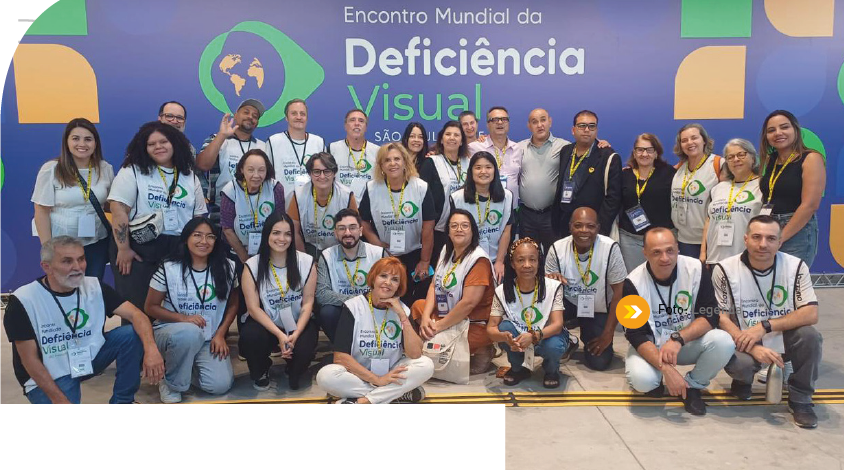
LEGENDA: Foto: Voluntários no 11º Encontro Mundial da Deficiência Visual. FIM DA LEGENDA.
Página 36
Recursos Humanos
Em 2025, a área de Recursos Humanos atuou no fortalecimento das equipes da Fundação, com foco na atração de novos talentos e na qualificação contínua dos profissionais, contribuindo para a ampliação e o aprimoramento dos serviços prestados aos clientes.
Ao longo do ano, o quadro de colaboradores manteve média de 147 profissionais por mês. Nos processos seletivos realizados, a Fundação recebeu mais de 8.000 candidaturas por meio da plataforma de atração de talentos, com média aproximada de 140 interessados por vaga, demonstrando o interesse de profissionais em atuar em uma instituição alinhada a propósitos sociais e ao compromisso com a inclusão.
A atuação da área também esteve voltada à manutenção de um ambiente de trabalho qualificado e colaborativo, buscando garantir condições adequadas para o desenvolvimento das equipes e para a continuidade das atividades realizadas pela Fundação.
Página 37
![Imagem: Fotografia. Duas pessoas caminham lado a lado em um corredor interno. À esquerda, mulher de cabelos pretos e lisos, na altura dos ombros, veste camisa xadrez azul e branca e calça preta. À direita, homem de cabelos curtos e castanhos usa óculos escuros, camisa estampada cinza de manga curta e calça preta; ele segura uma bengala longa branca com a mão esquerda, posicionada à frente do corpo, enquanto segura o braços da mulher com a mão direita. À direita, janela com grades e vidro. O piso é branco com piso tátil sobre ele. Fim da imagem.](../resources/images/image_Image14669.png)
LEGENDA: Foto: Carlos Alberto, atendido pela Fundação Dorina, e sua esposa Aldenice. FIM DA LEGENDA.
Página 38
Captação de Recursos
A área de Captação de Recursos tem papel estratégico para a sustentabilidade da instituição, sendo responsável por fortalecer o relacionamento com apoiadores e ampliar continuamente as fontes de financiamento. O trabalho da equipe envolve a manutenção das parcerias existentes, a prospecção de novos doadores e o desenvolvimento de iniciativas que garantam a continuidade e a expansão dos atendimentos gratuitos realizados pela Fundação.
Em 2025, a Fundação encerrou o ano com 11.651 doadores ativos, resultado de um esforço permanente de fidelização e de aprimoramento das ações de relacionamento com mantenedores. A arrecadação proveniente de doações recorrentes totalizou Cinco milhões seiscentos e cinquenta e um mil seiscentos e sete reais e nove centavos contribuindo de forma significativa para a manutenção das atividades institucionais.
No campo das parcerias institucionais, mais de 25 empresas apoiaram projetos por meio de patrocínios diretos e de mecanismos de incentivo fiscal, possibilitando a captação de Três milhões seiscentos e sessenta e cinco mil oitocentos e dezesseis reais e noventa e oito centavos A Fundação seguiu atuando com recursos provenientes de leis e fundos como FUMCAD, CONDECA, PROAC e Lei Rouanet, assegurando o financiamento de programas voltados ao atendimento de pessoas cegas ou com baixa visão em todo o país.
A campanha de destinação do Imposto de Renda por pessoas físicas apresentou crescimento em relação ao ano anterior, alcançando Cento e sessenta e quatro mil novecentos e sessenta e cinco reais e oitenta e quatro centavos em contribuições, resultado de ações de comunicação e mobilização voltadas à ampliação desse tipo de doação.
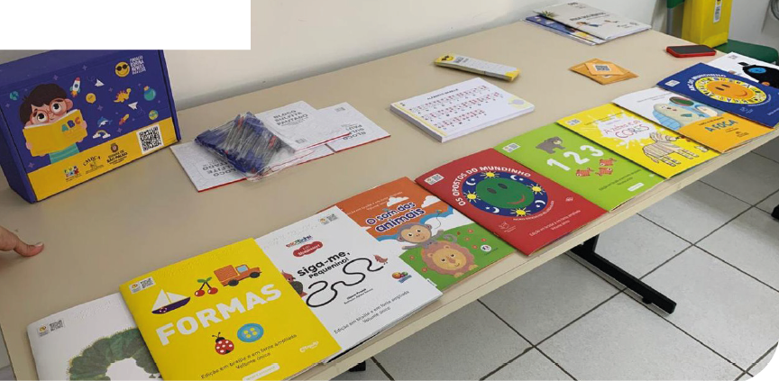
LEGENDA: Foto: Livros e materiais em braille produzidos pela Fundação Dorina. FIM DA LEGENDA.
Página 39
Boxe complementar:
Bazares sazonais ampliam as frentes de arrecadação
Em 2025, a Fundação implantou uma nova estratégia de captação de recursos com a realização de bazares sazonais em datas comemorativas. Ao longo do ano, foram promovidas três edições, no Dia das Mães, Dia das Crianças e Natal, que juntas arrecadaram mais de Duzentos mil reais A iniciativa contribuiu para diversificar as fontes de arrecadação e fortalecer o engajamento de parceiros, voluntários e apoiadores nas ações da instituição.
Fim do complemento.
Veja os nossos números:
11.651
doadores ativos
Cento e sessenta e quatro mil novecentos e sessenta e cinco reais e oitenta e quatro centavos
em contribuição de pessoa física (IR)
MAIS DE Duzentos mil reaisDuzentos mil reais
arrecadados com bazares sazonais
Quatrocentos e quatro mil novecentos e quarenta e um reais e sessenta e quatro centavos
provenientes da Nota Fiscal Paulista (NFP)
Três milhões seiscentos e sessenta e cinco mil oitocentos e dezesseis reais e noventa e oito centavos
em contribuição de empresas parceiras
Cinco milhões seiscentos e cinquenta e um mil seiscentos e sete reais e nove centavos
em contribuição de mantenedores
![Imagem: Fotografia. Sala ampla com piso cinza e paredes cinza com painéis retangulares; no teto há várias luminárias retangulares brancas e um aparelho de ar-condicionado. À esquerda, uma janela interna com moldura marrom; abaixo dela há um cesto metálico branco com produtos e, ao lado, uma estante amarela com caixas de brinquedo. À direita, há um suporte branco com bolsas e cintos pendurados. Atrás, de ambos os lados, há araras com muitas roupas penduradas. Na lateral direita e ao fundo, há mesas marrons com produtos expostos. Fim da imagem.](../resources/images/image_Image14740.png)
LEGENDA: Foto: Bazar sazonal. FIM DA LEGENDA.
Página 40
Empresas parceiras
Parceiros de Visão
Conheça as empresas que contribuíram para as conquistas e avanços da Fundação Dorina, por meio de patrocínios, doações e apoio aos projetos realizados ao longo do ano:
DIAMANTE |
|
OURO | |
BRONZE |
|
COBRE |
|

![Imagem: Logotipo do Banco Daycoval composto pelo nome em letras cinzas e azuis e, no canto inferior esquerdo, ilustração de um pequeno retângulo cinza e azul. Logotipo da Loga composto pelo nome em letras pretas, sendo as letras O, G em azul e verde formando o símbolo do infinito. Logotipo da Fundação Prada composto pelo nome em letras maiúsculas pretas e, acima, a ilustração de uma árvore com folhas verdes e azuis. Logotipo do Instituto Rodobens composto pelo nome em letras verdes. Logotipo da Tenda atacado composto pelo nome em letras brancas sobre um retângulo azul e vermelho. Fim da imagem.](../resources/images/image_2.png)
![Imagem: Logotipo da Atlas Schindler composto pelo nome em letras vermelhas; acima, a ilustração de um círculo cinza com um triângulo no centro, na parte inferior. Logotipo da Bic composto pelo nome em letras maiúsculas pretas dentro de um retângulo laranja; à esquerda, ilustração de um boneco com cabeça de esfera preta e roupa amarela, ele segura uma caneta atrás do corpo. Logotipo da Bic Corporate Foundation composto pelo logotipo da Bic e, abaixo, o nome em letras pretas. Na parte inferior, a frase ’We Give to Create’; no canto superior esquerdo, arabescos coloridos. Logotipo da CART, composto pela ilustração da silhueta de um retângulo na vertical sobre um círculo em azul e amarelo; abaixo, o nome em letras maiúsculas azuis. Logotipo da FF Seguros composto pelo nome em letras azuis, entre as palavras há a ilustração de dois símbolos de maior que em preto. À direita, na parte inferior, o texto ’A FAIRFAX Company’. Logotipo do Instituto Helena Florisbal composto pelo nome em letras maiúsculas verdes e, à esquerda, a ilustração da silhueta de uma pessoa de palito com os braços para cima. Logotipo do Instituto de Responsabilidade Societe Generale composto pelo nome em letras maiúsculas pretas e, à esquerda, a ilustração de um quadrado vermelho e preto. Logotipo da Alupar composto pelo nome em letras azuis com uma barra verde na parte superior. Logotipo da Taesa composto pelo nome em letras minúsculas azuis com um asterisco colorido no canto superior direito. Logotipo da Trench Rossi Watanabe, composto pelo nome em letras vermelhas e um ponto final vermelho. Fim da imagem.](../resources/images/image_3.png)
Página 41
Nota Fiscal Paulista
Uma importante frente de captação de recursos da Fundação é o programa Nota Fiscal Paulista (NFP). Por meio de parcerias com estabelecimentos comerciais, são disponibilizadas urnas para coleta de notas sem CPF, doadas pelo consumidor, que podem ser destinadas à instituição e convertidas em recursos para apoiar as ações voltadas à inclusão e à acessibilidade de pessoas cegas ou com baixa visão. Em 2025, a campanha contou com a atuação de 33 voluntários, responsáveis pela digitação de Um milhão trezentas e oitenta e cinco mil seiscentas e trinta e três notas fiscais ao longo do ano, o que resultou na arrecadação de Quatrocentos e quatro mil novecentos e quarenta e um reais e sessenta e quatro centavos A continuidade dessa iniciativa reforça a importância da participação da sociedade e das parcerias com o comércio para viabilizar recursos que contribuem diretamente para a manutenção e a ampliação dos atendimentos realizados pela Fundação.
Página 42
Comunicação e Marketing
A área de Comunicação e Marketing da Fundação Dorina Nowill para Cegos atua de forma integrada às estratégias institucionais, com o objetivo de ampliar resultados, fortalecer o posicionamento da marca e gerar visibilidade qualificada para suas iniciativas. Seu trabalho conecta a causa aos diferentes públicos com os quais a Fundação se relaciona, como clientes, colaboradores, conselheiros, parceiros e a sociedade, transformando informação em conexão, sensibilização e oportunidades.
Ao longo de 2025, a área orientou sua atuação por eixos estratégicos que consolidaram a presença e a relevância da Fundação no cenário nacional, com foco no fortalecimento da marca como referência em inclusão, no posicionamento institucional como autoridade em acessibilidade para pessoas cegas ou com baixa visão, na ampliação da visibilidade dos projetos e no engajamento contínuo de parceiros e da sociedade.
Essa atuação permite que a Comunicação não apenas acompanhe as ações institucionais, mas atue como elemento estruturante para sua expansão e sustentabilidade. Comunicar, nesse contexto, é também incluir, ao ampliar vozes, promover acesso à informação e fortalecer vínculos, sustentando, cotidianamente, o propósito da Fundação.
![Imagem: Fotografia. Em um campo de futebol, fileiras de pessoas lado a lado. À esquerda, um grupo de homens veste uniformes brancos e verdes e há um homem de uniforme azul. Ao lado deles, há várias crianças usando coletes amarelos com o logotipo da Fundação Dorina Nowill para Cegos; algumas crianças seguram bengalas longas verdes ou brancas. Em seguida, há quatro homens de uniforme preto, dois deles seguram bandeiras amarela e laranja e ao lado, há uma bola de futebol. Atrás, grupo de homens de uniforme branco e preto e um homem de uniforme amarelo. Ao lado, há mais crianças de coletes amarelos. Ao fundo, uma arquibancada e um grande painel verde com um escudo circular e a palavra PALMEIRAS em branco. À direita, um arco roxo e verde com o texto BRASILEIRÃO Betano em branco. Fim da imagem.](../resources/images/image_Image14908.png)
LEGENDA: Foto: Entramos em campo no jogo Palmeiras x Bahia com os atendidos pela Fundação. FIM DA LEGENDA.
Página 43
Confira alguns dos eventos mais importantes de 2025 que contaram com o planejamento e a organização da área:
Bett Educar
Participação institucional em um dos principais eventos de educação e tecnologia do país, ampliando a visibilidade da Fundação junto a educadores, gestores públicos e especialistas, e fortalecendo seu posicionamento no campo da inovação educacional inclusiva.
Campanha “Pega Essa Visão”
Abril Marrom
Ação de conscientização voltada à prevenção e combate à cegueira, com ampla circulação em canais digitais e institucionais, contribuindo para a disseminação de informações sobre saúde ocular e mobilizando diferentes públicos em torno da causa.
Terceiro Prêmio LEGO® Braille Bricks
Iniciativa que reconheceu práticas pedagógicas inovadoras de educadores de diferentes regiões do país, evidenciando o potencial do LEGO® Braille Bricks como ferramenta de alfabetização inclusiva e fortalecendo a rede de educadores comprometidos com a inclusão.
Congresso Brasileiro de Oftalmologia
Presença institucional em um dos mais relevantes encontros da área médica, ampliando o diálogo com profissionais da saúde, fortalecendo parcerias estratégicas e consolidando a Fundação como referência no campo da reabilitação visual.
Encontro Mundial da Deficiência Visual
Participação em evento de alcance internacional, promovendo o intercâmbio de experiências, a articulação com organizações globais e o fortalecimento da agenda de inclusão e acessibilidade para pessoas com deficiência visual.
Página 44
Gestão Executiva, Administrativa e Financeira
Em 2025, foram realizadas diversas ações voltadas ao fortalecimento dos processos internos, ao aprimoramento das práticas de governança e à garantia da conformidade institucional, com foco na organização, no controle e na transparência das atividades. As iniciativas incluíram a atualização de políticas, a realização de treinamentos, o desenvolvimento de procedimentos internos e o acompanhamento de ações estratégicas, contribuindo para a sustentabilidade e o bom funcionamento da Fundação.
Processos internos
Elaboração do Plano de Treinamentos para colaboradores, incluindo elaboração de roteiro e gravação, em nosso estúdio, das cartilhas que serão disponibilizadas via EAD:
• Cartilha de Direitos Humanos
• Cartilha de Interação com Agentes Públicos
• Treinamento de Reciclagem do Código de Ética e Conduta
• Treinamento sobre a Linha Ética (troca de plataforma)
• Cartilha de Assédio Moral e Sexual
• Cartilha sobre Papéis e Responsabilidades do Compliance Officer
• Cartilha sobre Violência contra a Mulher
Criação das Políticas de:
• Programa de Compliance
• Gestão de Riscos e Compliance
Divulgação de Pílulas de Integridade:
• Riscos Psicossociais – NR1
• Combate à transfobia, bifobia e homofobia
• Dia Mundial de Combate ao Trabalho Infantil (Doze de junho)
• Orgulho LGBT – respeito às diferenças
• Importância da Gestão de Riscos, informando sobre o mapeamento que será feito
• 12º aniversário da Lei Anticorrupção Brasileira Doze mil oitocentos e quarenta e seis de dois mil e treze (Primeiro de agosto)
• Dia Internacional da Luta da Pessoa com Deficiência (Vinte e um de setembro)
• Dia Internacional da Saúde Mental (Dez de outubro)
Página 45
• Dia Nacional da Prevenção à Lavagem de Dinheiro (Vinte e nove de outubro)
• Combate ao bullying
• Dia da Consciência Negra (Vinte de novembro)
• Dia Internacional contra a Corrupção (Nove de dezembro)
• Dia Internacional dos Direitos Humanos (Dez de dezembro)
Mapa de Riscos Corporativos.
• Mitigação dos principais riscos com implementação de protocolos e processos.
Elaboração da Metodologia de Mensuração dos Riscos de Compliance (Impacto e Probabilidade).
• Realização de 12 entrevistas com colaboradores de diversas áreas para levantamento dos riscos.
Impacto social
• Continuidade, em 2025, dos Programas de Habilitação e Reabilitação, assim como da formação de novos talentos esportivos, na qual incluímos mais uma instituição.
• Programa de Habilitação e Reabilitação Remoto – Brasil, expandindo o atendimento da Fundação para além de São Paulo, com parcerias com a ACIC, em Santa Catarina, e com a ISMAC, no Mato Grosso do Sul.
• Formação de novos talentos para as práticas esportivas, por meio das parcerias com a Naurú (Atletismo) e com o CADEVI (Goalball).
• Projeto de treinamento de Goalball e Judô com a ISMAC, no Mato Grosso do Sul.
• Realização de um edital de ajuda para as instituições atingidas pela enchente em Maio de dois mil e vinte e cinco no Rio Grande do Sul. Ajudamos oito instituições na reconstrução de sedes e aquisição de outros materiais.
![Imagem: Fotografia. Em uma sala de reunião, um homem está em pé ao fundo, gesticulando. Atrás dele há uma tela de projeção com a ilustração de um rosto sorridente usando óculos escuros e o texto SOLUÇÕES EM ACESSIBILIDADE. À frente, há diversas pessoas sentadas atrás de mesas marrons dispostas em formato retangular. Sobre as mesas, há notebooks e livros. Ao fundo, janelas com persianas brancas entreabertas, e na parede da esquerda, há uma parede amarela e branca com retratos em preto e branco e o texto GALERIA DOS PRESIDENTES. Fim da imagem.](../resources/images/image_Image14927.png)
LEGENDA: Foto: Aprimoramento contínuo de atividades por meio de formações. FIM DA LEGENDA.
Página 46
Gestão de Projetos
Em 2025, a carteira de projetos da Fundação contou com 46 iniciativas, distribuídas em diferentes etapas de desenvolvimento e vinculadas a três principais fontes de recursos: Leis de Incentivo, Fundos Governamentais e Investimento Social Privado.
Ao longo do ano, os projetos passaram por distintas fases, incluindo elaboração de propostas, captação de recursos, conveniamento, etapa que formaliza os procedimentos necessários para o início da execução, execução das atividades e prestação de contas. Diversas iniciativas percorreram mais de uma dessas etapas dentro do próprio ano, exigindo acompanhamento contínuo e controle técnico e administrativo.
Considerando todos os status registrados ao longo de 2025, foram contabilizados 62 registros de acompanhamento relacionados aos 46 projetos, refletindo o avanço das iniciativas entre as diferentes fases de desenvolvimento. O trabalho da área esteve concentrado no monitoramento sistemático de cada projeto, garantindo que as atividades fossem realizadas de acordo com os parâmetros estabelecidos, incluindo prazos, metas e orçamentos. A equipe atuou em parceria com as áreas responsáveis, oferecendo suporte técnico e administrativo para assegurar a correta execução das ações e o cumprimento das exigências contratuais.
Os projetos gerenciados ao longo do ano tiveram papel fundamental na ampliação das ações voltadas às pes soas com deficiência visual e contribuíram diretamente para a sustentabilidade institucional da Fundação. Os resultados detalhados serão apresentados nos gráficos a seguir, que indicam o status dos projetos, os segmentos envolvidos e as fontes de recursos utilizadas.
Página 47
GRÁFICO 1
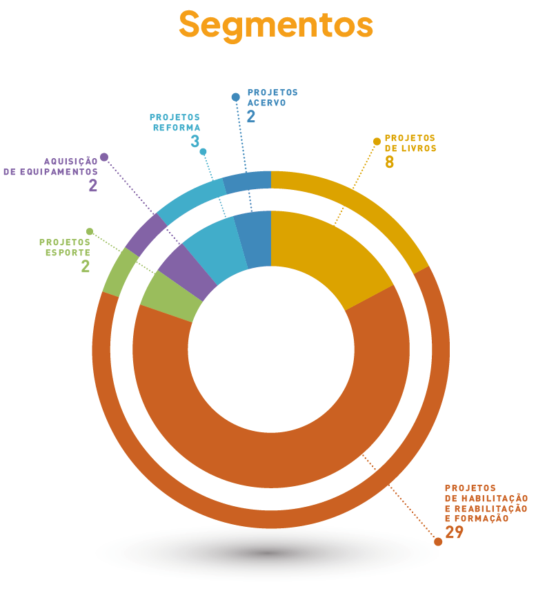
Página 48
GRÁFICO 2
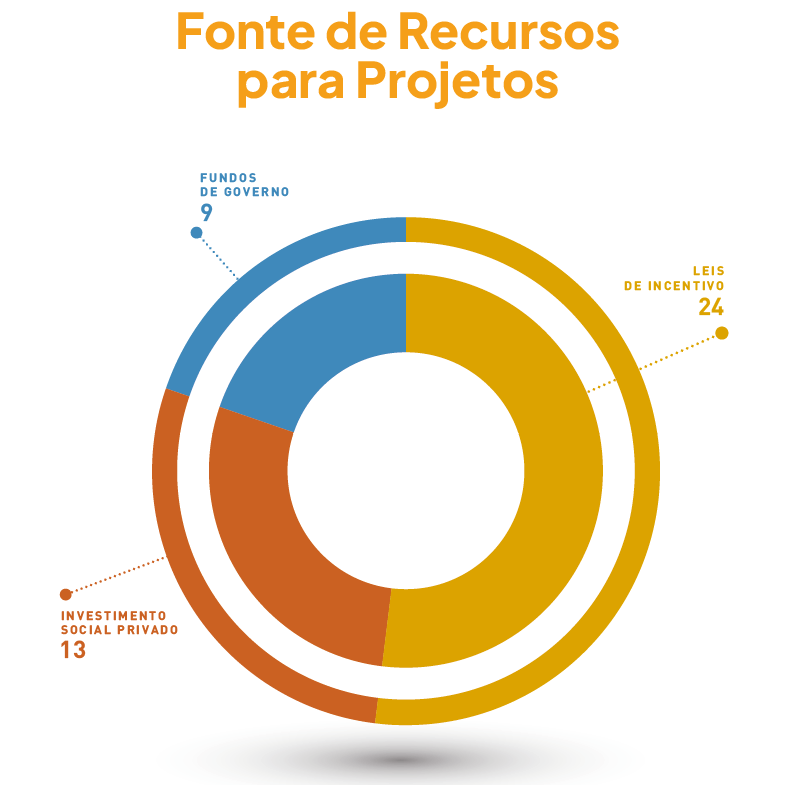
Página 49
ODS
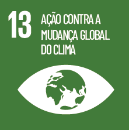
OBJETIVO 13. Tomar medidas urgentes para combater a mudança do clima e os seus impactos (*)

OBJETIVO 12. Assegurar padrões de produção e de consumo sustentáveis

OBJETIVO 11. Tornar as cidades e os assentamentos humanos inclusivos, seguros, resilientes e sustentáveis

OBJETIVO 16. Promover sociedades pacíficas e inclusivas para o desenvolvimento sustentável, proporcionar o acesso à justiça para todos e construir instituições eficazes, responsáveis e inclusivas em todos os níveis

OBJETIVO 17. Fortalecer os meios de implementação e revitalizar a parceria global para o desenvolvimento sustentável

OBJETIVO 3. Assegurar uma vida saudável e promover o bem-estar para todos, em todas as idades
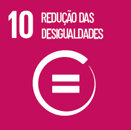
OBJETIVO 10. Reduzir a desigualdade dentro dos países e entre eles

OBJETIVO 5. Alcançar a igualdade de gênero e empoderar todas as mulheres e meninas

OBJETIVO 8. Promover o crescimento econômico sustentado, inclusivo e sustentável, emprego pleno e produtivo e trabalho decente para todos

OBJETIVO 4. Assegurar a educação inclusiva e equitativa de qualidade, e promover oportunidades de aprendizagem ao longo da vida para todos
Página 50
Tecnologia da Informação e Desenvolvimento e Inovação
Em 2025, a área de Tecnologia da Informação da Fundação marcou um ano de avanços expressivos no desenvolvimento de plataformas e ferramentas digitais próprias, consolidando sua capacidade de inovação e ampliando o ecossistema tecnológico da instituição. Destaque para a evolução da plataforma braille, sistema desenvolvido internamente para transcrição e produção de livros em braille, que avançou como um ecossistema completo de produção — reafirmando o compromisso da Fundação com a acessibilidade por meio da tecnologia.
Paralelamente, a Dorina IA, ferramenta de inteligência artificial treinada com o know-how institucional, atingiu sua fase final de desenvolvimento, com implantação prevista para 2026. Ao longo do ano, foram criados softwares internos voltados ao aumento de produtividade e à melhoria dos fluxos de trabalho, promovendo maior integração entre as áreas e mais eficiência nos processos — inclusive durante o período de reforma da sede, quando a TI atuou para garantir a continuidade plena das atividades e o suporte às equipes.
![Imagem: Fotografia. Um notebook cinza está aberto sobre uma superfície branca, com a tela voltada para a frente, onde há uma página de internet com barra superior branca e itens de menu: Início, Docx, Revisões e Descrições salvas; à direita, um seletor com o texto Português e um ícone de engrenagem. Abaixo, à esquerda, logotipo da Fundação Dorina Nowill para Cegos. À direita, há uma caixa de texto com conteúdo digitado seguida por dois botões: Descrever novamente e Cancelar. Na parte inferior esquerda da tela, a informação: copyright 2026. Criado com amor por Fundação Dorina Nowill para Cegos. Fim da imagem.](../resources/images/image_Image15044.png)
LEGENDA: Foto: Dorina IA, tecnologia de inteligência artificial da Fundação Dorina. FIM DA LEGENDA.
Página 51
Advocacy
No ano de 2025, a área de Advocacy participou ativamente de conselhos, fóruns, comissões e espaços de articulação institucional relacionados à defesa de direitos, ao fortalecimento das políticas públicas e à promoção da acessibilidade e da inclusão social, especialmente no campo da assistência social e dos direitos das pessoas com deficiência. A atuação esteve voltada ao acompanhamento de normativas, participação em processos deliberativos e contribuição técnica em diferentes instâncias de controle social e formulação de políticas.
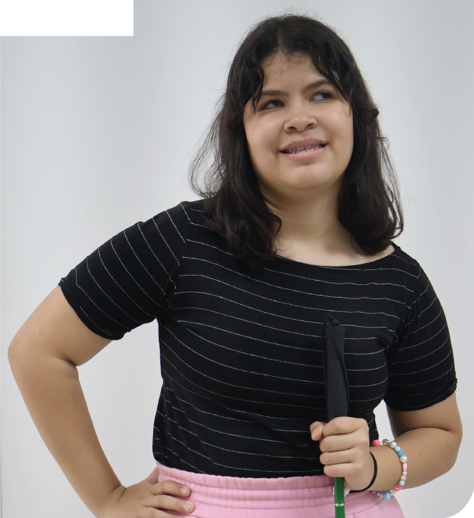
LEGENDA: Foto: Bianca Oliveira, atendida pela Fundação Dorina. FIM DA LEGENDA.
Página 52
Conselho Municipal de Assistência Social de São Paulo (COMASSão Paulo)
A Fundação Dorina esteve representada no Conselho Municipal de Assistência Social de São Paulo (COMAS) por meio da área de Advocacy, no segmento de entidades de assistência social, com atuação voltada à defesa e efetivação de direitos socioassistenciais, especialmente das pessoas com deficiência visual. Ao longo do ano, a participação contribuiu para o fortalecimento da transparência, da governança e da organização dos processos administrativos do Conselho, com impactos diretos para as organizações da sociedade civil.
Em 2025, teve continuidade a aplicação dos prazos estabelecidos pela Resolução COMAS Número dois mil cento e dezoito de dois mil e vinte e três que regulamenta os processos de inscrição e manutenção das entidades. Diante do volume de processos acumulados de anos anteriores, foi organizada uma força-tarefa para análise e regularização das solicitações, resultando na avaliação de aproximadamente 536 processos, entre inscrições e manutenções. A medida contribuiu para dar maior celeridade aos procedimentos, com regras mais claras e menos burocráticas.
A área também participou da construção do Guia Prático do COMAS para Inscrição e Manutenção de Entidades, elaborado com o objetivo de ampliar a transparência e facilitar o acesso das organizações às informações necessárias para regularização junto ao Conselho.
Outro destaque foi a participação na formulação e aprovação do Código de Ética do COMAS, iniciativa voltada ao fortalecimento das práticas de governança, integridade e responsabilidade institucional.
Durante o ano, houve ainda atuação na Comissão Organizadora da Conferência, responsável pela realização das Trinta e duas Conferências Regionais de Assistência Social e da 16ª Conferência Municipal, que contou com a participação de aproximadamente 9 mil pessoas. O processo envolveu reuniões técnicas, acompanhamento de contratos, articulação com a Secretaria Municipal de Assistência Social, supervisões regionais e acompanhamento presencial das conferências.
No campo do financiamento da política pública, o Conselho aprovou número recorde de recursos provenientes de emendas parlamentares, totalizando mais de 18 milhões de reais destinados a organizações socioassistenciais do município. Também foi aprovada resolução que apresentou, pela primeira vez, valores detalhados do orçamento previsto para a assistência social em 2026, estimado em 5,2 bilhões de reais.
Ainda no âmbito do COMAS, foi realizada a análise e aprovação da prestação de contas da Secretaria Municipal de Assistência Social referente ao exercício de 2024, fortalecendo o cumprimento das atribuições legais do Conselho e a transparência na gestão pública.
Página 53
Fundo Estadual de Defesa dos Interesses Difusos (FID)
No âmbito do Fundo Estadual de Defesa dos Interesses Difusos, vinculado à Secretaria Estadual de Justiça e Cidadania, a participação ocorreu no acompanhamento de projetos financiados com recursos do fundo, incluindo eventos institucionais e reuniões relacionadas à liberação de convênios com municípios do Estado de São Paulo.
Entre as ações do ano, destacam-se a entrega de projeto de acessibilidade em Paranapiacaba e a assinatura de convênios com prefeituras, totalizando cerca de 290 milhões de reais destinados a obras públicas, com exigência de inclusão de requisitos de acessibilidade nos projetos aprovados.
Conselho Municipal dos Direitos da Criança e do Adolescente de São Paulo (CMDCA/SP)
No Conselho Municipal dos Direitos da Criança e do Adolescente de São Paulo a participação da área de Advocacy esteve relacionada principalmente aos temas de financiamento, registro de entidades e garantia de direitos. Em 2025 foi lançado edital temático voltado a projetos relacionados à evasão escolar, utilizando recursos anteriormente reservados na margem de segurança do fundo municipal.
Também houve contribuição na formulação do Edital de Captação FUMCAD 2025, com apontamentos voltados à garantia dos direitos de crianças e adolescentes com deficiência, além da atuação na Comissão de Registros, acompanhando processos e defendendo os interesses das organizações representadas.
Comissão Permanente de Acessibilidade (CPA)
Na Comissão Permanente de Acessibilidade, vinculada à Secretaria Municipal da Pessoa com Deficiência, a atuação esteve voltada ao debate de soluções técnicas e políticas relacionadas à acessibilidade urbana.
Em 2025, foram discutidas alternativas tecnológicas para os semáforos sonoros utilizados por pessoas cegas ou com baixa visão, buscando conciliar as necessidades dos usuários com demandas de moradores das regiões onde os equipamentos estão instalados. Também foram realizadas visitas técnicas para avaliação de acessibilidade em espaços culturais e públicos, como o Parque da Água Branca, o prédio da Bienal e o Parque do Ibirapuera, além da certificação de acessibilidade concedida ao Theatro Municipal.
A comissão também participou de discussões sobre transporte acessível e da análise de projetos e sites para concessão de selos de acessibilidade.
Página 54
Ordem dos Advogados do Brasil – Seccional São Paulo (OAB/SP)
A área de Advocacy participou das atividades da Comissão dos Direitos do Terceiro Setor e da Comissão dos Direitos da Pessoa com Deficiência da Ordem dos Advogados do Brasil – Seccional São Paulo contribuindo para debates sobre legislação, políticas públicas e garantia de direitos.
Entre as ações do ano, destacam-se a participação em evento nacional do terceiro setor, a atuação em audiência pública sobre proposta legislativa relacionada à Lei Brasileira de Inclusão e a colaboração em iniciativas de implementação de acessibilidade em eventos e comunicações institucionais.
Também houve participação em consulta pública do Conselho Nacional de Justiça sobre instrumento de avaliação biopsicossocial para processos relacionados ao Benefício de Prestação Continuada (BPC).
Articulação com órgãos públicos e fóruns de representação
Ao longo do ano, a área de Advocacy manteve diálogo permanente com órgãos públicos, fóruns e movimentos sociais, incluindo reuniões com a Subprefeitura da Vila Mariana para implantação de piso tátil no entorno da Fundação, além da participação em fóruns e grupos de representação da assistência social, da acessibilidade e do terceiro setor. Esses espaços de articulação contribuíram para o acompanhamento de políticas públicas, fortalecimento da participação social e defesa de direitos das pessoas com deficiência e das organizações da sociedade civil.
Página 55
![Imagem: Fotografia. Ao centro, uma torre alta de tijolos marrons com um relógio com número romanos e uma cúpula no topo. Abaixo e ao redor da torre, há uma área ferroviária com vários trilhos curvados, vagões e locomotivas em tons de vermelho e marrom, com alguns em azul e branco, e estruturas metálicas com vigas e passarelas. Na parte inferior, uma passarela elevada de concreto e metal atravessa os trilhos, com escadas nas duas extremidades. Ao fundo, uma encosta coberta por vegetação. Fim da imagem.](../resources/images/image_Image15062.png)
Paranapiacaba: acessibilidade em um patrimônio histórico paulista
Em 2025, a participação da área de Advocacy no Fundo Estadual de Defesa dos Interesses Difusos (FID) esteve presente na entrega das obras de reforma da Trilha da Pedra Lisa, localizada na vila histórica de Paranapiacaba, no município de Santo André.
Conhecida por sua forte relação com a antiga São Paulo Railway, Paranapiacaba preserva construções e paisagens que remontam ao período de expansão ferroviária no Estado de São Paulo, sendo hoje um importante patrimônio histórico, cultural e ambiental. A entrega do projeto ocorreu no Cine Lyra, considerado o primeiro cinema do Estado, construído para atender os trabalhadores da ferrovia inglesa que viviam na região.
A intervenção realizada com recursos do FID integrou melhorias de infraestrutura e adequações que ampliam as condições de acesso ao espaço, reafirmando a importância de que ações de preservação do patrimônio também estejam comprometidas com a acessibilidade e com o direito de todas as pessoas à fruição dos bens culturais e naturais.
A presença da Fundação nesse processo reforça seu compromisso com a promoção de políticas públicas que considerem a inclusão como parte essencial do desenvolvimento, contribuindo para que espaços históricos e turísticos se tornem cada vez mais acessíveis.
Página 56
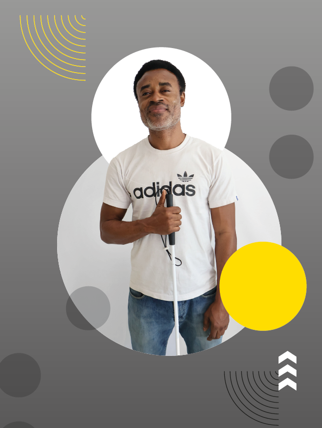
LEGENDA: Foto: Marcelo Kawika, atendido pela Fundação Dorina. FIM DA LEGENDA.
Página 57
5. Indicadores Financeiros
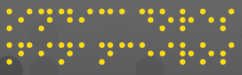
Página 58
GRÁFICO 1
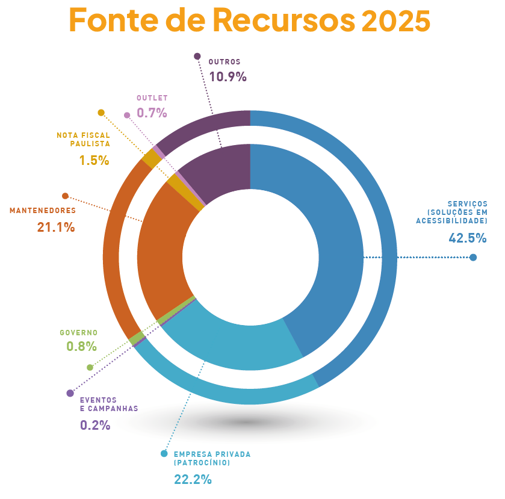
Página 59
GRÁFICO 2
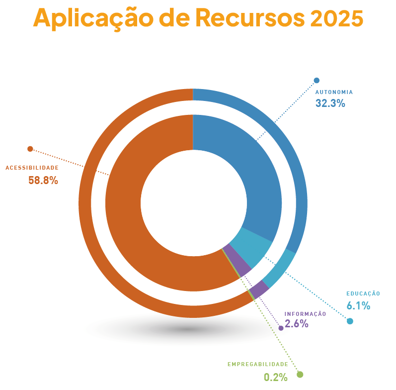
Página 60
Demonstrações Contábeis
Em 31 de dezembro de 2025 e 2024
Com Relatório dos Auditores Independentes
Quadro: equivalente textual a seguir.
(Valores expressos em reais) | |||
Balanço patrimonial findo em 31 de dezembro de 2025 e 2024 | |||
Notas Explicativas | 2025 | 2024 | |
Circulante | |||
Caixa e equivalentes de caixas Recursos próprios | 5(a) | 15.488.561 | 21.578.755 |
Caixa e equivalentes de caixas Recursos restritos | 5(b) | 4.758.494 | 4.112.750 |
Clientes | 6 | 406.538 | 809.459 |
Estoques | 7 | 1.661.842 | 143.374 |
Despesas antecipadas | 8 | 25.791 | 20.424 |
Outros créditos | 9 | 239.754 | 1.126.556 |
sem dados | 22.580.980 | 27.791.318 | |
Não circulante | |||
Títulos e valores Mobiliários | 10 | 172.061.365 | 148.902.663 |
Depósitos judiciais | 13 | 35.945 | 32.465 |
sem dados | 172.097.310 | 148.935.128 | |
Imobilizado e intangíveis | |||
Imobilizado | 11 | 18.742.427 | 6.563.636 |
Intangível | 12 | 1.080.797 | 949.708 |
Bens em comodato | sem dados | 29.120 | 29.120 |
sem dados | 19.852.344 | 7.542.464 | |
Total do ativo | sem dados | 214.530.634 | 184.268.910 |
As notas explicativas são parte integrante das demonstrações contábeis e estão disponíveis no site da Fundação, assim como todos os quadros de demonstração financeira e relatório de auditoria.
Página 61
Quadro: equivalente textual a seguir.
Balanço patrimonial findo em 31 de dezembro de 2025 e 2024 | |||
Notas Explicativas | 2025 | 2024 | |
Circulante | |||
Fornecedores | 13 | 778.922 | 413.165 |
Salários e encargos sociais | sem dados | 444.761 | 421.970 |
Provisões de férias e encargos | 4(h) | 735.062 | 760.922 |
Convênios, subvenções e leis de incentivo a realizar | 17 | 4.758.494 | 4.112.682 |
Projetos próprios a realizar | 18 | 2.502.531 | 1.071.076 |
sem dados | 22.580.980 | 6.779.815 | |
Não circulante | |||
Provisão para demandas judiciais | 14 | 1.246.181 | 1.246.181 |
Bens em comodato | sem dados | 29.120 | 29.120 |
sem dados | 1.275.301 | 1.275.301 | |
Patrimônio líquido | |||
Patrimônio Social | 15 | 176.213.794 | 170.034.052 |
Superávit / (Déficit) do exercício | 16 | 27.821.769 | 6.179.742 |
sem dados | 204.035.563 | 176.213.794 | |
Total do passivo e patrimônio líquido | sem dados | 214.530.634 | 184.268.910 |
As notas explicativas são parte integrante das demonstrações contábeis e estão disponíveis no site da Fundação, assim como todos os quadros de demonstração financeira e relatório de auditoria.
Página 62
Quadro: equivalente textual a seguir.
Demonstrações dos resultados dos exercícios findos em 31 de dezembro de 2025 e 2024 | |||
Receitas operacionais Com restrição | Notas Explicativas | 2025 | 2024 |
Lei Rouanet, Proac e Convênios | 17 | 4.298.732 | 3.991.762 |
Projetos patrocinados | 18 | 1.782.697 | 911.525 |
sem dados | 6.081.429 | 4.903.287 | |
Sem restrição | |||
Doações e campanhas | 19 | 6.641.449 | 5.287.443 |
Venda de bens e serviços | 21 | 5.122.303 | 6.411.200 |
Outras receitas | 20 | 37.419 | 915.134 |
| sem dados | 11.801.171 | 12.613.777 |
Gratuidades | |||
Trabalho voluntário | 23 | 741.136 | 505.303 |
Gratuidades recebidas | 24 | 2.476.508 | 3.181.547 |
sem dados | 3.217.644 | 3.686.850 | |
Total das receitas | 21.100.244 | 21.203.914 | |
Despesas Operacionais Com restrição | |||
Execução de convênios | 17 | (4.298.732) | (3.991.762) |
Desp. com projetos patrocinados | 18 | (1.782.697) | (911.525) |
Contrapartida projetos LBB | sem dados | (366.541) | sem dados |
Contrapartida projetos LBB | sem dados | (366.541) | sem dados |
| sem dados | (6.447.970) | (4.903.287) |
Sem restrição | |||
Pessoal, encargos e benefícios | 27a | (8.525.594) | (7.518.665) |
Despesas administrativas | 27b | (6.413.276) | (5.435.420) |
Projetos Institucionais | sem dados | (2.358.813) | (249.008) |
Contrapartida de uso de imóvel | 26 | (67.329) | (296.092) |
Depreciação e amortização | 11 e 12 | (1.345.029) | (1.167.079) |
(18.710.041) | (14.666.264) | ||
As notas explicativas são parte integrante das demonstrações contábeis e estão disponíveis no site da Fundação, assim como todos os quadros de demonstração financeira e relatório de auditoria.
Página 63
Quadro: equivalente textual a seguir.
Demonstrações dos resultados dos exercícios findos em 31 de dezembro de 2025 e 2024 | |||
Despesas operacionais | Notas Explicativas | 2025 | 2024 |
Sem restrição | |||
Serviços gratuitos | |||
Trabalho voluntário | 23 | (741.136) | (505.303) |
Contrapartida gratuidades recebidas | 24 | (2.476.508) | (3.181.547) |
sem dados | (3.217.644) | (3.686.850) | |
Total das despesas | sem dados | (28.375.655) | (23.256.401) |
Superávit/(Déficit) operacional Receitas não operacionais | sem dados | (7.275.411) | (2.052.487) |
Outras receitas não operacionais | 20 | 5.306.032 | sem dados |
Superávit/(Déficit) antes do resultado financeiro | sem dados | (1.969.379) | (2.052.487) |
Resultado financeiro | 28 | 29.791.148 | 8.232.229 |
Superávit/(Déficit) do exercício | sem dados | 27.821.769 | 6.179.742 |
Isenções e renúncia fiscal | 22 | 12.697.350 | 5.150.564 |
Cota Patronal Previdenciária | sem dados | (2.529.737) | (2.345.359) |
Pis Sem Fopag | sem dados | (99.205) | (91.975) |
IRPF | sem dados | (6.931.442) | (1.520.936) |
CSLL | sem dados | (2.503.959) | (556.177) |
COFINS | sem dados | (633.007) | (636.117) |
Superávit/(Déficit) do exercício | sem dados | 27.821.769 | 6.179.742 |
As notas explicativas são parte integrante das demonstrações contábeis e estão disponíveis no site da Fundação, assim como todos os quadros de demonstração financeira e relatório de auditoria.
Página 64
Relatório do Auditor Independente sobre as
Demonstrações Contábeis
Aos Conselheiros da Fundação Dorina Nowill Para Cegos São Paulo – São Paulo
Opinião
Examinamos as Demonstrações contábeis da Fundação Dorina Nowill Para Cegos “Entidade”), que compreendem o balanço patrimonial em 31 de dezembro de 2025 e as respectivas demonstrações do resultado, das mutações do patrimônio líquido e dos fluxos de caixa para o exercício findo nessa data, bem como as correspondentes notas explicativas, compreendendo as políticas contábeis significativas e outras informações elucidativas. Em nossa opinião, as Demonstrações contábeis acima referidas apresentam adequadamente, em todos os aspectos relevantes, a posição patrimonial e financeira da Fundação Dorina Nowill Para Cegos em 31 de dezembro de 2025, o desempenho de suas operações e os seus fluxos de caixa para o exercício findo nessa data, de acordo com as práticas contábeis adotadas no Brasil e entidades sem fins lucrativos (ITG 2002).
Base para opinião
Nossa auditoria foi conduzida de acordo com as normas brasileiras e internacionais de auditoria. Nossas responsabilidades, em conformidade com tais normas, estão descritas na seção a seguir intitulada “Responsabilidade do auditor pela auditoria das Demonstrações contábeis”. Somos independentes em relação à Entidade, de acordo com os princípios éticos relevantes previstos no Código de Ética Profissional do Contador e nas normas profissionais emitidas pelo Conselho Federal de Contabilidade e cumprimos com as demais responsabilidades éticas de acordo com essas normas. Acreditamos que a evidência de auditoria obtida é suficiente e apropriada para fundamentar nossa opinião.
Página 65
Responsabilidade da Administração e da Governança pelas Demonstrações Contábeis
A Administração da Entidade é responsável pela elaboração e adequada apresentação das Demonstrações contábeis de acordo com as práticas financeiras adotadas no Brasil e entidades sem fins lucrativos (ITG 2002), e pelos controles internos que ela determinou como necessários para permitir a elaboração de demonstrações contábeis livres de distorção relevante, independentemente se causada por fraude ou erro.
Na elaboração das demonstrações contábeis, a Administração é responsável pela avaliação da capacidade da Entidade continuar operando, divulgando, quando aplicável, os assuntos relacionados com a sua continuidade operacional e o uso dessa base contábil na elaboração das demonstrações contábeis, a não ser que a Administração pretenda liquidar a Entidade ou cessar suas operações ou não tenha nenhuma alternativa realista para evitar o encerramento das operações.
Os responsáveis pela governança da Entidade são aqueles com responsabilidade pela supervisão do processo de elaboração das demonstrações contábeis.
Responsabilidade do Auditor pela Auditoria das Demonstrações Contábeis
Nossos objetivos são obter segurança razoável de que as Demonstrações contábeis, tomadas em conjunto, estão livres de distorção relevante, independentemente se causada por fraude ou erro, e emitir relatório de auditoria contendo nossa opinião.
Segurança razoável é um alto nível de segurança, mas não uma garantia de que a auditoria realizada de acordo com as normas brasileiras e internacionais de auditoria sempre detectam as eventuais distorções relevantes existentes. As distorções podem ser decorrentes de fraude ou erro e são consideradas relevantes quando, individualmente ou em conjunto, possam influenciar, dentro de uma perspectiva razoável, as decisões econômicas dos usuários tomadas com base nas referidas Demonstrações contábeis.
Como parte de uma auditoria realizada de acordo com as normas brasileiras e internacionais de auditoria, exercemos julgamento profissional, e mantemos ceticismo profissional ao longo da auditoria. Além disso:
• Identificamos e avaliamos os riscos de distorção relevante nas Demonstrações contábeis, independentemente se causada por fraude ou erro, planejamos e executamos procedimentos de auditoria que respondam a esses riscos e obtivemos evidência de auditoria suficiente e apropriada para fornecer uma base para nossa opinião. O risco de não se detectar uma distorção relevante resultante de fraude é maior que aquele de se detectar uma distorção relevante resultante de erro, uma vez que a fraude pode envolver conluio, falsificação, omissões intencionais, falsas declarações ou transgressão dos controles internos;
Página 66
• Obtivemos entendimento dos controles internos relevantes para a auditoria para planejarmos procedimentos de auditoria que são apropriados nas circunstâncias, mas não para fins de expressar uma opinião sobre a eficácia dos controles internos da Entidade.
• Avaliamos a adequação das políticas financeiras utilizadas e a razoabilidade das estimativas financeiras e das respectivas divulgações feitas pela Administração.
• Concluímos quanto à adequação do uso, pela Entidade, da base contábil de continuidade operacional e, com base na evidência de auditoria obtida, se existe incerteza relevante relacionada com eventos ou condições que podem levantar dúvida significativa quanto à capacidade de continuidade da Entidade. Se concluirmos que existe incerteza relevante, devemos chamar atenção em nosso relatório de auditoria para as respectivas divulgações nas Demonstrações contábeis ou incluir modificação em nossa opinião, se as divulgações forem inadequadas.
Nossas conclusões se baseiam na evidência de auditoria obtida até a data do seu relatório. Contudo, eventos ou condições futuras podem fazer com que a Entidade interrompa a sua continuidade operacional.
Avaliamos a apresentação geral, a estrutura e o conteúdo das Demonstrações contábeis, inclusive as divulgações e se as Demonstrações contábeis representam as correspondentes transações e os eventos de maneira compatível com o objetivo de apresentação adequada. Comunicamo-nos com os responsáveis pela governança a respeito, entre outros aspectos, do alcance planejado, da época da auditoria e das constatações significativas de auditoria, inclusive as eventuais deficiências significativas nos controles internos que identificamos durante nossos trabalhos.
São Paulo, 29 de abril de 2026.
Irko Hirashima
Auditores Independentes
CRC - 2SP020649
Denison Santos Vieira
Contador
CRC - 1SP319963/O-6
Página 67

LEGENDA: Foto: Bernardo Vilas Boas, atendido pela Fundação Dorina. FIM DA LEGENDA.
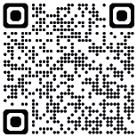
O BALANÇO COMPLETO ESTÁ DISPONÍVEL NO SITE:
http://fdnc.io/mo4
Página 68

LEGENDA: Foto: Silvana Grasmostine, atendida pela Fundação Dorina. FIM DA LEGENDA.
Página 69
6. Conselho e Gestão
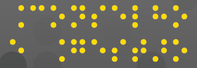
Página 70
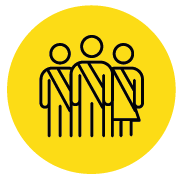
Conselho e Gestão Presidência e Vice-Presidência
Conselho Curador
Eduardo de Oliveira
Presidente
Roberto Faldini
1º Vice-Presidente
Luiz Felipe Passos Fleury
2º Vice-Presidente
Anne Catherine Olesen
3ª Vice-Presidente
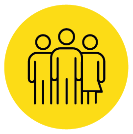
Gestão Executiva
Alexandre dos Santos Oliveira Munck
Superintendente Executivo
Carla De Maria
Gerente de Soluções em Acessibilidade
Kátia Amaral
Gerente Executiva Administrativa e Finanças
Maria das Graças Martins de Oliveira
Gerente Executiva de Recursos Humanos
Rafael Martins Gonçalves
Gerente de TI, Desenvolvimento e Inovação | D.P.O
Taisa Pelucio
Gerente de Captação de Recursos e Marketing

Conselho Consultivo
Ana Maria Moraes Velloso
Celso Alves Feitosa
Cristiane Porto Rodrigues Da Cunha
Flávio Mendes Bitelman
Hiran Castello Branco
Marcelo Morgado Cintra
Maria Carolina Pinto Coelho Carvalho
Maria Lúcia Kerr Cavalcante De Queiroz

Conselho Fiscal
Ana Luiza Salles Lourenço Oliveira
Demetrio De Souza
Marcelo José Pires Barbosa (Presidente)
Página 71

Conselho de Curadores
Adriana de Magalhães Gouvêa
Adriano Formosinho Correia
Alfredo Weiszflog
Andrea Fonseca França
Antonio Carlos Grandi
Bento Leandro Carneiro
Célia Cristina Monteiro de Barros Whitaker
Cristiano Humberto Nowill
Cristina Faria de Castro Brandão
Dulce Arena Avancini
Estela Maria Lemos M. Soares de Camargo
Flavio Bauer
Francisco Henrique Chimenti Della Manna
Geraldo Pinheiro da Fonseca Filho
Gustavo Victor de Paula Baptista
Henrique José Fernandes Luz
Irineu da Costa Cruz
João Batista Maia da Silva
Joaquim Romeu Espinheira Teixeira Ferraz
José Cláudio da Rocha e Silva
Karine Gonçalves Pansa
Leonardo Barém Leite
Luiz Casimiro de Queiroz
Luiz Henrique Prescendo
Marcio Manoel Nowill
Maria Cristina Godoy Cruz Felippe
Maria do Carmo Novaes Bueno Cury (Tuza Cury)
Martha Vicente de Azevedo Nowill
Moisés Bauer Luiz
Nair Passos Fleury (Ika Fleury)
Regina Carvalho Dias de Gouvêa
Reynaldo Rey Zani
Rodrigo Caldas de Toledo Aguiar
Silvia Saddi Cury
Victor de Oliveira Cosme
Expediente
União de esforços de profissionais de conteúdo, design, revisão e coordenação.
Superintendência Executiva
Alexandre Munck
Gerência de Captação de Recursos e Comunicação & Marketing
Taisa Pelucio
Coordenação de Comunicação & Marketing
Carolina Orilio
Produção de Conteúdo
Danielle Bambace - W5 Publicidade
Projeto Gráfico
Beto Paixão - W5 Publicidade
Diagramação
Malu Paiva - W5 Publicidade
Apoio
Cláudia Piazza Costa
Rodrigo Torres
Fotografias
Acervo da Fundação Dorina
Cecília Furtado
Cléo Acevili
Fernando Pimentel
Rodrigo Torres
Direção Artística
W5 Publicidade